（1/4）万字复盘：0代码基础，如何用 AI 做出10万人玩过的独立游戏？我的工作流程 + Vibe Coding 开发心得

今年 8 月，我做的第一款单机独立游戏《群侠传：幸存者》在 Steam 上线了，以抢先体验（EA）的形式免费开放。
截至本文写作时，它在 Steam 上有 2100 多条评测，97% 是好评，被标记为“好评如潮”。累计超过 20 万玩家入库。
这个数据其实远远超出了我当时对它的预期。临近发售时，它的愿望单才堪堪超过 1000 个。一开始，我只是把它当作探索游戏开发和 Vibe Coding 的一个小作业，从没想过会有这么多人玩过它，还愿意给出积极的评价。

今年 4 月，给这个项目提交第一个 Commit 的时候，我没有任何游戏开发经验，没打开过游戏引擎，甚至一行代码也没写过，是个彻头彻尾的“小白”。但那时的我就想试试看，能不能用现有的这些 AI 工具，把我想要的这个游戏给做出来。
从结果看我应该是成功了——这里面的代码、美术、动画、音乐和配音，绝大部分都是我使用一系列的 AI 模型、Agent，在大约 3 个月里完成的。
早在今年 7 月的一条视频里，我就和大家分享过制作这个游戏的全套工作流程。但受视频篇幅和呈现形式所限，很多技术细节没能完整交代。之前想做的系列视频，也因为一些原因迟迟未能动工……
所以在这篇文章里，我想尽可能完整地写下这套工作流程，分享过程中碰到的问题，以及最后的解决方式：早期的需求和调研怎么做，代码怎么交给 Agent 写，美术和动画怎么从 AI 生成的素材变成游戏里能用的成品，以及音频和配音是怎么处理的，最后再到上线以后，AI 又怎么帮我做一些发布、运营的工作。每个环节用到的模型、工具，实践中行之有效的 Prompt，还有踩过的坑、绕过的弯路，我都尽量写进来了。
虽然这个游戏体量很小，题材略显老套，目前也还比较粗糙，但我仍然希望这套制作流程，能给正在或打算用 AI 做游戏的朋友一些帮助。
（P.S. 第一次写这么长的文章。全文较长，可以按大纲挑感兴趣的部分读。如果里面的经验和做法对你有帮助，欢迎点个赞或者关注！）
先上个大纲：
1. 游戏介绍与项目背景
2. 开发时间线、技术栈与工作流
3. 需求澄清与对标调研
4. AI Coding：引擎、模型与协作方式
5. AI 美术：风格统一与资产制作
6. AI 动画、特效与 CG
7. AI 音频：音乐、音效与配音
8. AI 辅助发布与运营
9. 开发心得：玩家反馈与人的判断
一、游戏介绍与项目背景
一句话就可以概括，它就是一个武侠版的《吸血鬼幸存者（Vampire Survivors）》（又或者《土豆兄弟（Brotato）》？），在经典的割草升级选武器的基础上，又加进了中式武侠中的许多外功招数、内功心法的搭配要素，和一小点我的奇思妙想（？）。
「这不就是经常刷到的那种换皮小程序游戏吗？」
“你说得对，但是《群侠传：幸存者》是一款包体大小为 1.5 个 G（当然这里面也有我没优化好的原因在）的 PC 单机游戏。游戏发生在一个被称作「江湖」的世界，在这里，习得各种绝世武学的人将自动出招，除了 WASD 和空格啥都不用按。你将扮演一位初入江湖的少侠，在 20 波的围攻中搭配外功招式与内功心法，借助各种道具组成自己的武学流派，击败强敌，闯过二十波挑战，踏入无尽模式，并逐步发掘「我这套搭配已经无敌了，怎么还是死了」的真相。”
这个游戏首发的时候其实还只是个半成品，但在大约 2 个月的版本迭代以后，我感觉它看起来更像一个完整的游戏了。目前的内容量大概包括了：
• 153 门武学（外功 / 内功 / 轻功）
• 247 件道具
• 分属 8 方势力的 55 种敌人
• 20 波主线 + 无尽模式，113 个奇遇事件
• 61 个 Steam 成就
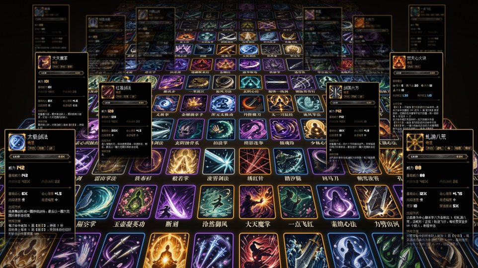
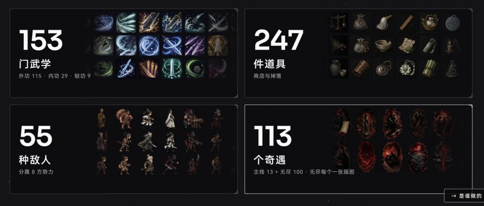
游戏在 8 月 11 日以抢先体验上线，EA 期间免费开玩
它的成绩也和大家汇报一下，截至本文写作时：Steam 全部语言评测有 2115 条（简中 1800 多条）、综合 97% 好评；项目侧统计的激活数是 20.9 万（把游戏领进 Steam 库的数量），而真正打开玩过的，大约是 12.8 万人，平均游戏时长约 5 小时 40 分钟，中位游戏时长约 2.5 个小时，同时在线人数的峰值，应该是上线 1–2 周那会儿，能有 1500 多名玩家在线游玩。
很诚实地说，我认为它能得到这个评价，有很大一部分因素是因为它是免费的，大家会更包容，也可能是想用这样的方式鼓励、鞭策我去对游戏做更多改进。但它的游戏时长似乎也可以证明：它并非一个只为证明模型能力而生的小 Demo，而是一个能让玩家投入时间、享受乐趣的游戏。
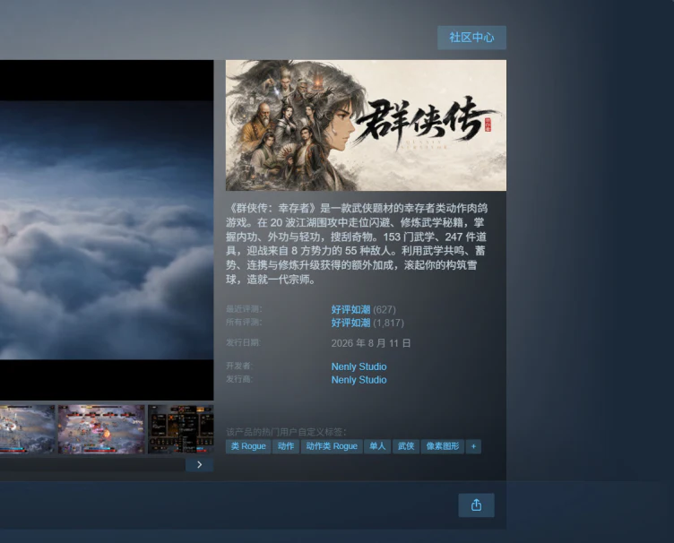
灵感来源：武侠小说与 Survivor-like
在成为一名新手游戏开发者之前，大家更熟悉的身份，是一名 AI 内容创作者。我在 2023 年开始做 AI 内容，最早做的是包括 Stable Diffusion 和 ComfyUI 在内的一些 AI 绘图工具的教程，这些教程播放量还不错，应该也帮到了不少初学者，为我在各个平台积累了一些观众。
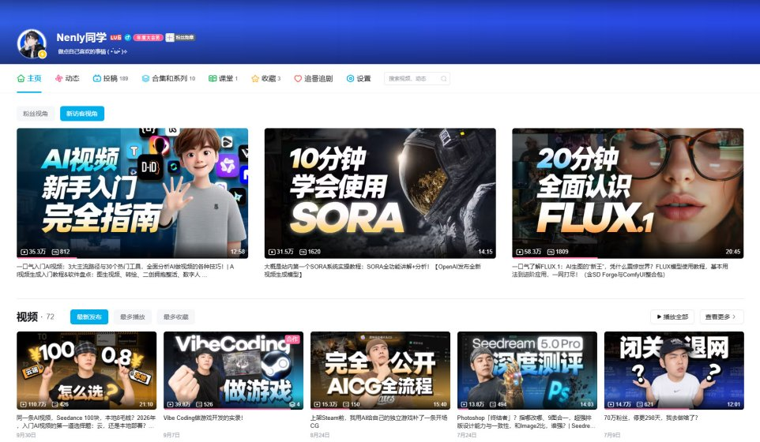
因为工作的缘故，我经常接触 AI 工具。从今年年初开始，我感觉各种大模型各方面的能力也在慢慢往上提升——尤其是代码能力，从前两年那种做啥啥有 Bug 的婴儿期，慢慢进化到了一种能初步完整交付一个项目的青少年阶段；同时在被小龙虾刺激了一波以后，市场上的各种 Coding Agent 开始变得流行起来。
看到很多和我一样不会写代码的普通人，开始借助它们把想法做出来，我也着手探索。
摸索新东西时，我不太习惯先看教程，而是会找一个自己感兴趣的项目，直接上手开搞，“干中学”。
恰好今年二三月份，我因为生病，在家躺了两个月，也很自然地给我留出了一个来探索的“空窗期”。
说来有点惭愧，那段时间我其实只干了两件事：一件是重读了大学时特别喜欢的一系列武侠小说，前后读了上百个小时；
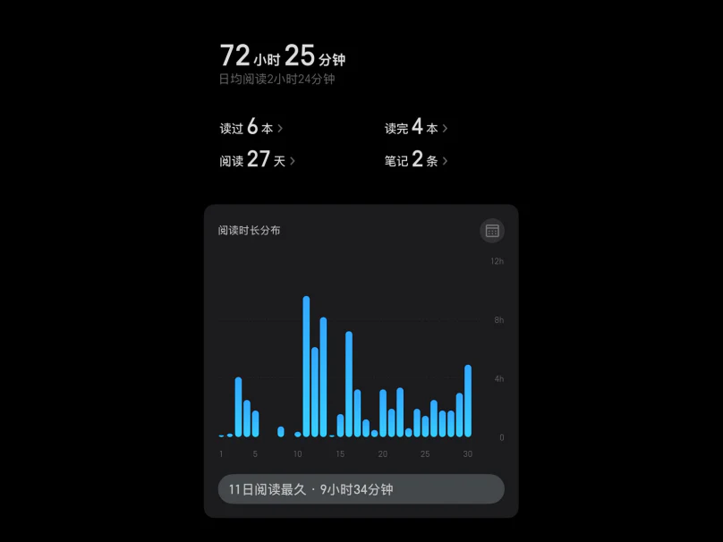
另一件事就是打游戏啦！��
其中花时间最多的，应该就是一些武侠 RPG 和 Survivor-like 了。
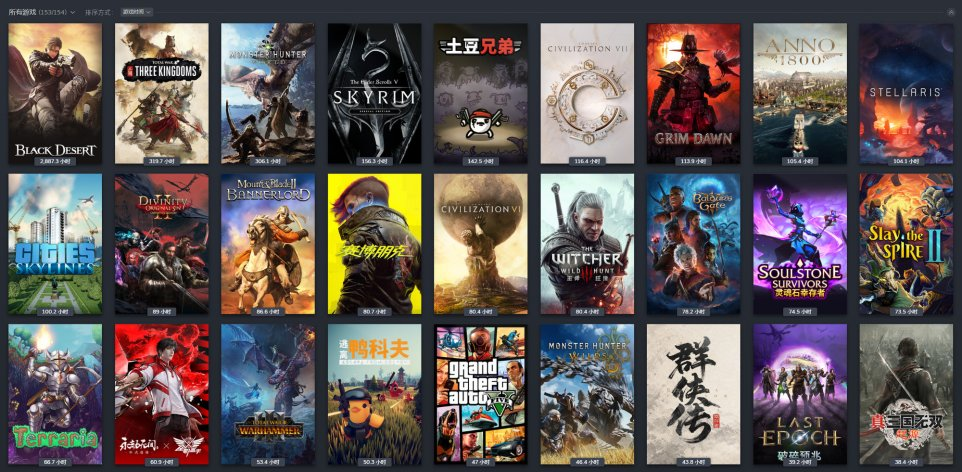
我个人其实是 Survivor-like 这个类目的老玩家了，从吸血鬼幸存者，到后来的土豆兄弟、灵魂石幸存者，大概都玩了有百个小时上下。读武侠小说的时候，我满脑子都是里面各种酷炫的武学招数、内功心法，某一天晚上睡觉的时候，突然就想到：这些武功搭配、组合的框架，不是天然就有点肉鸽和 Survivor-like 的味道嘛？
所以当时我就一拍枕头上的脑门，决定做一个武侠风格的 Survivor-like，作为我的“练手”项目。
于是便有了后来这个游戏。
二、开发时间线、技术栈与工作流
开发时间线
从新建文件夹到初具规模，我花在这个游戏上的时间大约是 3 个月。如果从起意算到现在，这个项目已经走过了将近 8 个月。大致的时间线是这样的：
• 2 月底：开始构思，和 AI 完成了第一轮对话。
• 2 月到 4 月：吃饭、睡觉、玩游戏，项目几乎没动。
• 4 月中下旬：真正动手。4 月底有了第一版 Demo 和第一次提交，玩法框架随后确定。
• 5 月初到 6 月底：主体美术、动画和 UI 做完，游戏初具规模。
• 7 月初：第一次对外展示。
• 7 月中到 8 月初：继续增补游戏内容，比如打击感、远程武器和光效 VFX。
• 8 月 11 日：V0.1.0 上线，就是前面我说的那个半成品，战斗只有 17 波，武学只有 120 门左右。随后两周修 Bug、做优化，连续推了十来个小版本。
• 8 月下旬到 9 月底：根据反馈持续打磨新内容。
• 10 月 1 日：V0.2.0 上线，加入终章剧情、刀法路数、蓄势/连携系统、无尽奇遇、手柄支持。之后又更新了 V0.2.1、V0.2.2。
• 10 月 26 日：V0.2.3 上线，加入司辰观，重做 VFX 系统，并做了一系列道具精简与优化。
上线后的 2 个月，我仍然在高强度更新。但同时还有视频等其他工作，很难准确算出花在开发上的时间。
但如果用 Git 的提交记录来描述，这几个月我的开发节奏大概就是这样的：
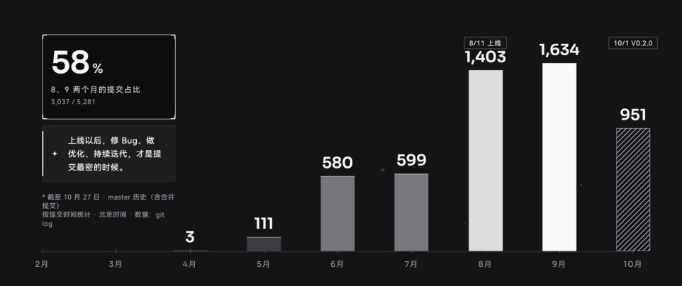
虽然这里面绝大多数 Commit 都是 Agent 自行提交和管理的，但至少能反映出我抽鞭子赶着 AI 干活的频率……吧
我的个人体感也和这些数字基本一致，上线后的两个月，忙碌程度大概是之前的 2–3 倍吧。一方面，是大家的反馈和评价推着我做了更多改进；另一方面，则是 AI 给我堆的屎山也在上线后陆续爆了，从而让我不得不花大量时间和 Token 去重构底层代码。（之前的视频里聊过这件事，大家感兴趣的话，我可以再单独写写 hhh）
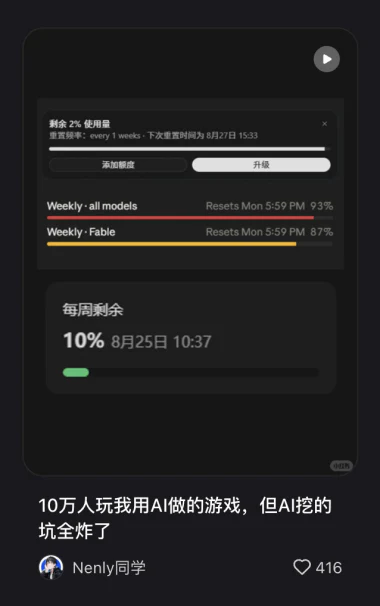
Token 消耗与统计口径
啊对了，还有 Token 的消耗量。
我其实不怎么想强调这个数字，因为 Token 消耗和项目的产出水平之间并没有什么必然的联系。但每次做分享或者发视频，总有朋友问，想了解撑起这样一个项目，需要多少模型层面的成本。
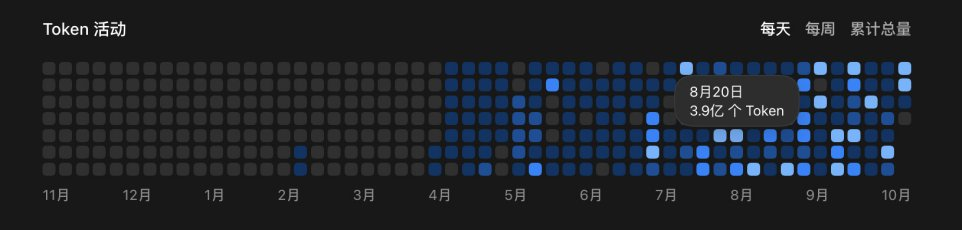
老实说，我没有特别细致地统计过，只能用 Codex 留下的记录给大家一个大致参考。不同模型、应用统计消耗量的口径都不一样，现在 Claude Code（CC）也把消耗量隐藏起来了。
但我翻了一下，大约 8 月初我做一个视频的时候曾经留了一份截图，那会儿我的主力 Harness 还是 Codex，它的总消耗额度是 58 亿左右。
有 20-30 亿左右用在了前期立项+搭建整个项目的系统框架上，余下的就是具体功能的开发和资产的接入。不包括生图，因为我的素材大部分是在一些外部平台做的。另外 CC 这边还有零星几亿的消耗，用在一些 Review 和编码工作上。
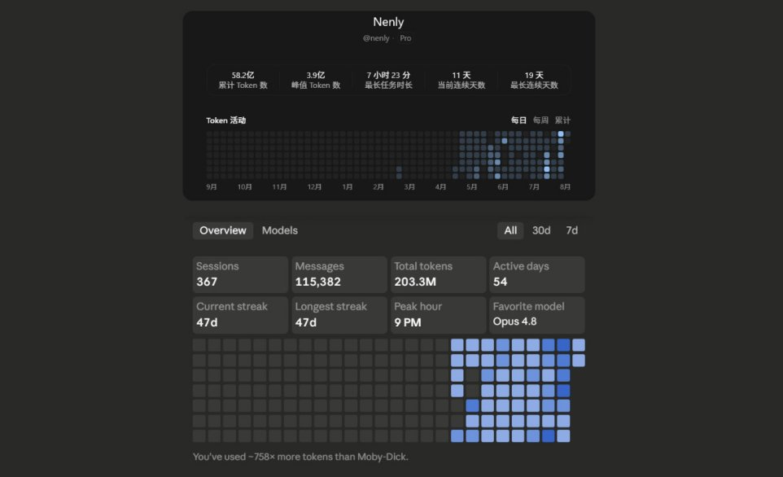
所以比较公允地说，这个游戏从一个受精卵变成一个能玩的 Demo，大约花了我 60 亿 Token。至于后续的迭代和改进，涉及太多细节和分支了，就实在是无法丈量了。
六个环节与主要工具
在展开具体的开发过程之前，先放一张全景图，概括我经历的各个环节，以及使用的几乎所有工具。也可以把它看作这个项目的“技术栈”。
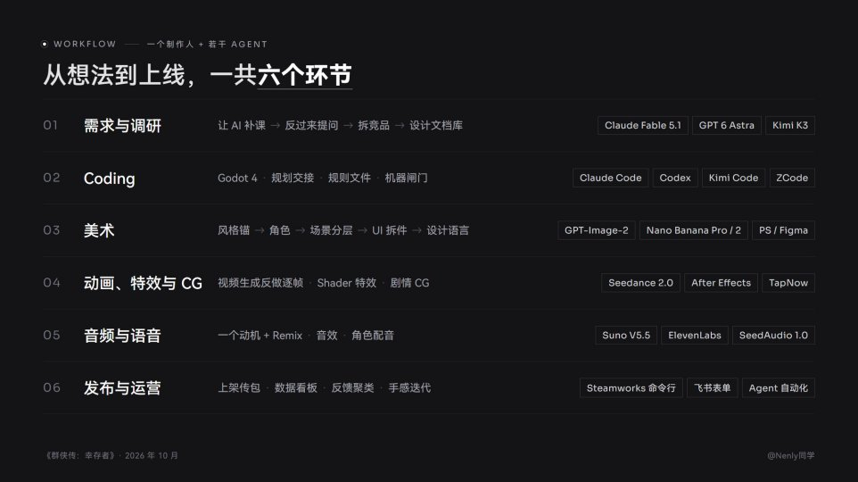
整个流程大致分为六个环节：
1. 需求与调研
1. 让 AI 给我补课，了解做一个游戏所需的所有技能
2. 让 AI 反过来以“拷打我”的方式，帮我澄清需求并撰写 GDD
3. 再让 AI 帮我拆对标、分析数据，写一份量身定制的“教科书”
4. 最后让 AI 把这些讨论落成一个可以长期跟踪、维护的设计文档库
2. Coding
1. 引擎的选择：Godot 4
2. 模型的选择：GPT 5.5 + Opus 4.8
3. Harness 的选择，和我的 AGENTS.md
3. 美术
1. 锚定风格：“伪”像素风和类似 HD-2D 的光影质感
2. 角色和敌人：AI 产出概念稿 → 风格迁移 → 手工抠图
3. 场景：AI 生成 + 手动分层
4. UI：AI 生成 + 拆件 + 设计 + 组件库
5. 视觉语言：文档化同步，并长期遵循
4. 动画、特效与 CG
1. 角色和敌人的动画：Seedance 2.0 生成绿幕视频、拆成 2D 序列帧
2. 刀光、冲击波、真气粒子：用程序化 Shader 做设计
3. 剧情 CG ：Seedance 2.5 生成
5. 音频与语音
1. BGM：Suno V5.5，靠核心动机串起听觉一致性
2. 音效：ElevenLabs 生成 + 视频模型生成自带音效
3. 角色配音：SeedAudio 1.0 生成
6. 发布与运营
1. 发布：Steam 上架、传包、成就、更新公告、数据看板
2. 数据分析：SteamStats 自动抓取，分析得到趋势
3. 反馈和意见收集：飞书多维表格建表，Agent 通过 lark-cli 抓取并同步归档
下面会以我当时使用的工具和模型为基础，介绍实际操作思路。不过 AI 的发展是相当迅速的，哪怕只是在两个月以后的今天，我在很多场景里的实践也发生了一些变化。针对这些部分，我也会做单独的补充和说明。
下面就按这个顺序，一个环节一个环节地和大家聊吧。
三、需求澄清与对标调研
我和 AI 关于这个游戏的第一段对话发生在 2 月，那时候我还在家躺着。我问它的问题其实特别朴素：
我想要从零开始通过vibe coding开发一个吸血鬼幸存者like游戏，但我没有代码基础，也没做过游戏。有什么是你觉得我必须知道的吗？
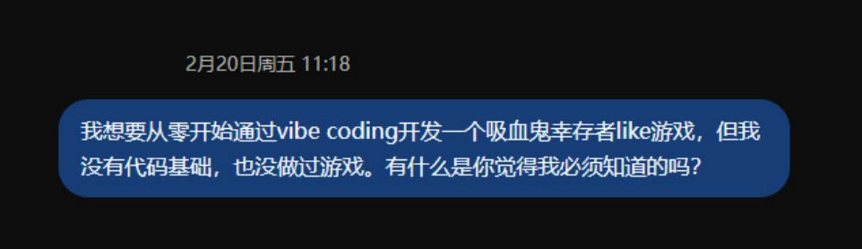
它想了 14 秒，列了十件「如果一开始不知道，后面会反复踩坑」的事。以下是它的回答原文：
你从零开始做吸血鬼幸存者 like，用 vibe coding（大量依赖 AI 写代码）是可行的，但有几件事如果一开始不知道，后面会反复踩坑。我按“必须知道”的优先级讲。
第一件事是你要先接受一个现实：AI 能帮你写出 80 分的代码，剩下的 20 分几乎都落在你身上，主要是报错定位、功能验收、把需求说清楚、把范围收住。你不需要会“从头写”，但你必须学会“读懂大概在干什么”，至少要能看懂变量是什么、函数做什么、报错指向哪一行。
第二件事是选对工具栈会决定你痛苦程度。对零基础做 2D 幸存者类，最顺滑的路线通常是选一个轻量 2D 引擎，让你用脚本语言快速迭代。很多人会选 Godot（GDScript）或 Unity（C#）。你的目标是先做出可玩的核心循环，所以别把时间消耗在复杂渲染、网络、多人联机、3D。你选哪一个都能做，关键是选一个后至少坚持做完一个小可玩版本再考虑换。
第三件事是你要把游戏拆成一个“最小可玩核心”，并且强制自己先做出来。吸血鬼幸存者 like 的最小核心循环可以很简单：
玩家移动躲怪
敌人持续刷出并追你
你自动攻击或发射简单子弹
碰撞扣血，击杀掉经验
经验升级，三选一强化
循环变强直到死亡或通关
只要这条链条跑通，你就已经赢了 50%。
第四件事是你必须理解几个游戏开发的基本概念，不用深入数学，但要能跟 AI 对齐语言。
1）帧与 delta time：游戏每帧更新一次，移动速度和计时要乘以 delta，避免不同电脑速度不同
2）场景与实例化：玩家、怪物、子弹都是可重复生成的对象
3）碰撞与判定：进入碰撞区，触发伤害、拾取经验
4）状态与数值：血量、速度、攻击间隔、伤害、范围、穿透，这些最好都数据化
5）随机与权重：刷怪、掉落、升级选项，本质是随机池和权重
6）对象池：子弹和特效会很多，频繁生成销毁会卡，后面要用复用池优化
7）事件系统：拾取经验、升级、受伤这类用事件或信号串起来，后期扩展更省心
第五件事是“内容”和“系统”要分开。新手最容易把所有逻辑写死在一堆代码里，做两把武器就开始崩。更稳的方式是先把系统写通，再用表格或配置文件加内容，比如每把武器只是一组数据：射速、伤害、弹道、特效、升级曲线。这样你后面做 30 把武器，改的主要是数据，不是代码。
第六件事是你要学会一个极其重要的习惯：版本控制与小步提交。哪怕你只会两条命令，也要用 Git 或至少用“按阶段复制备份文件夹”的方式保底。vibe coding 时 AI 可能一次改很多文件，出问题回滚会救命。你的迭代节奏建议是每次只做一个小目标，比如“让怪物能追玩家并碰撞扣血”，通过后再做下一个。
第七件事是你和 AI 的协作方式要“像写工单”。你给 AI 的信息越结构化，返工越少。你可以用这种模板提需求：
目标：实现升级三选一 UI
现状：已有经验条和等级数值，升级时只会加等级
约束：只用引擎自带 UI，先做占位按钮，功能优先
验收：经验满触发暂停，弹出 3 个选项，点击后应用加成并继续
把报错原文贴出来，把相关脚本贴出来，把你点了什么步骤也说清楚。
第八件事是你要学会读报错和最基本的调试。你不需要懂复杂调试器，但要会三招：
看报错最后几行，找到文件名和行号
用打印日志确认某段代码有没有运行
用二分法注释排查，缩小问题范围
这三招足够你走完第一个可玩版本。
第九件事是范围管理。这个类型的游戏很容易被特效、角色、剧情、上百种武器带飞。你给自己定一个“首个里程碑版本”的上限，比如：
1 张地图
1 个角色
3 把武器
10 种怪
1 个 Boss
1 套升级系统
做到这套就能发布一个 itch 级别的小样，后面再迭代内容。
第十件事是素材和版权。你可以先用纯色方块和免费音效做原型，千万别等美术齐了再开始写系统。等核心循环好玩之后再换素材。用素材时注意许可，尤其是音乐和字体。
如果你愿意，我可以按你选的引擎，给你一条从第 0 天到做出第一个可玩版本的“任务清单”，每个任务都配一段你直接复制给 AI 的提示词，并且每一步都有验收标准。你只需要告诉我你更想用 Godot 还是 Unity，或者你想做成网页小游戏也行。当时用的模型，我记得很可能是 GPT 5.4。我第一次看完以后其实不太以为然，心想好像又都是些 AI 总是会说的套路话。但在大半年以后的现在回头去看，其中有五条，几乎贯穿了我后面七个月的开发：
• AI 能帮你写出 80 分的代码，剩下的 20 分几乎都落在你身上：报错定位、功能验收、把需求说清楚、把执行范围收拢；
• 先把「最小可玩核心」做出来：移动躲怪、刷怪追你、自动攻击、击杀掉经验、升级三选一，这条链跑通，就已经赢了一半；
• 内容和系统要分开，数值尽量都数据化：以后做 30 把武器，改的主要是数据而不是代码；
• 跟 AI 提需求，要像写工单一样：目标、现状、约束、验收标准，一样不少；
• 小步提交，随时能回滚
当然，这些事情，今天的模型应该能和你讲得更加明白。我会非常推荐你以一个类似的问题，和你的 AI 开启这一趟旅途。
它当时还给了 Godot 和 Unity 两个引擎选项，后来我选了 Godot。具体的原因我们可以放在 Coding 那一节再聊聊。
需求澄清：让 AI 提问，逐步明确设计
到了 4 月份，当我真正准备开始这个项目的时候，我便在这个基础上开始了一些和游戏具体内容相关的规划。那时的我因为对做游戏这件事情一无所知，只能尝试学着一些专业的从业者的样子去思考问题，也通过和 AI 的对话了解到了游戏项目通常需要一份游戏设计文档（Game Design Document，GDD）来做支撑。
我其实不知道该从哪里写起。但之前用 AI 做其他项目时，有一个帮我挖掘需求、建立初步框架的办法屡试不爽：让它来提问。
当时我发的消息大概是这样的：
我想要做一个以《吸血鬼幸存者（Vampire Survivor）》、《土豆兄弟（Brotato）》、《灵魂石幸存者（Soulstone Survivor）》，
以及一系列武侠RPG游戏为灵感的类幸存者游戏，叫做《群侠传：幸存者》，主题是经典武侠小说中的各种群侠武学。
我希望和你一起设计这个游戏的玩法系统，并搭建出一个MVP来。
你可以通过向我提出一系列问题的方式，帮助我挖掘这个游戏的基本框架和内容架构，并生成一份游戏开发的大纲吗？这个操作其实有点像现在很火的那个 Grill-me 的 skill。当时我是在网页端去对话的，所以也没有现在很多 Harness 里那种 Ask Question 的弹窗，它就直接给我列了一份像这样的详细问单：
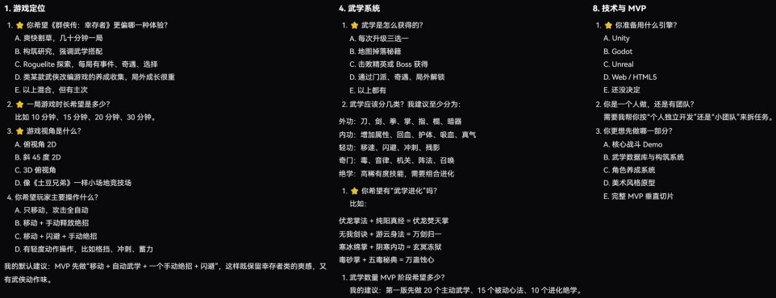
全文一共 30 多个问题，总体上包含了一个三步走的建议：
确定核心体验和边界 → 把玩法拆成可实现的模块 → 定义最小可玩版本
然后它基于这个大的脉络列了八组问题：游戏定位、世界观、角色、武学系统、构筑与属性、地图关卡、局外成长、技术与 MVP。最关键的几个问题还打了星号，让我优先回答，比如：
• 你希望它更偏爽快割草、构筑研究、Roguelite 探索，还是养成收集？
• 一局多长？10 分钟、15 分钟，还是 30 分钟？
• 玩家主要操作什么——只移动，还是再加闪避、加手动绝招？
就这么一问一答，我原本一团乱麻的需求被一点点敲定了：核心题材是什么，玩家的爽点在哪，玩完一局有什么理由再开第二局，对标的又是哪些游戏。
我花了大约 1–2 个小时，写了约 8000 字的回答给它。这里面包含了我对这个游戏的绝大多数原始的设计构想，包括武学、门派的架构，气血和内力系统，共鸣机制，等等等等。
之后，我们又补充聊了 2–3 轮。然后，它把我所有的内容，整理成了一个非常详尽的文件包，让我下载了以后保存到本地。
（当然，如果现在你使用的是一些本地文件系统上运行的 Agent，这一步应该可以直接帮你把相关文件归档到对应目录）
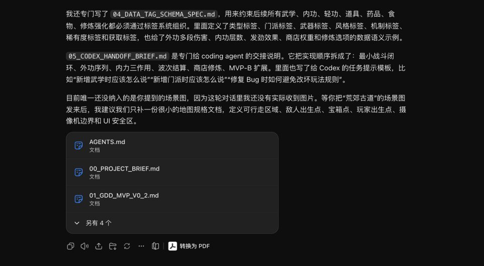
对标调研：拆解玩法、数值与经济系统
提到对标游戏，我其实一开始在构建这个游戏的时候，脑袋里是装着吸血鬼幸存者和土豆兄弟这两款我最喜欢的经典 Survivor-like 的，所以我自然很想学习一下他们是怎么做的。于是，我让它把《土豆兄弟》的数值和经济系统为我做了一遍拆解：
请你做一个非常详细的搜索和研究，
把《Brotato》的战斗数值和经济系统全面剖析一遍，
包括每一波刷出多少敌人、玩家不同武器伤害如何、每波会打死多少敌人之类的。所幸，这些游戏有非常多的 Wiki 资料库，甚至是开发者自己在各种场合的设计思路分享。我让 Agent 把收集到的这些海量数据做了一个分析，便有了下面的这一份东西：
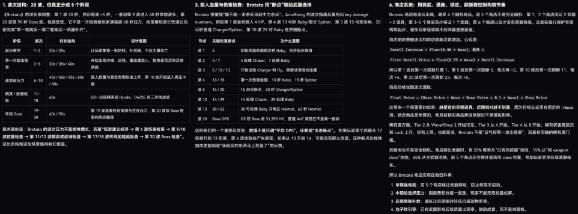
它告诉我的一个核心是：
《Brotato》的战斗与经济本质上不是「怪物越来越多」这么简单，而是一个非常紧密的三角系统：击杀吞吐量 → 材料 / 经验收入 → 商店购买与武器成型 → 下一波击杀吞吐量。报告最后，它还建议我给自己的每一波都定一张表：时长、目标体验、刷怪量、期望击杀、期望收入、关键血量断点、商店怎么承接……在报告的结尾，它还结合了我的项目情况，给了我一个非常直接的建议：先搭一副「波次经济骨架」，再往里面填武学和敌人。
这份报告，对于当时那个对数值设计一窍不通的我来说，简直是一个为这个项目量身打造的教科书。我后来反复看了很多遍，在自己开始尝试着给这个项目拟定数值的时候，也经常会翻出来参考里面的一些细节。
后来，我还用一些类似的方式，调研、学习了很多游戏里面的一些我感兴趣的机制、系统乃至视觉层面的实现方法。它们都给我实现、改进这个游戏带来了非常大的帮助。
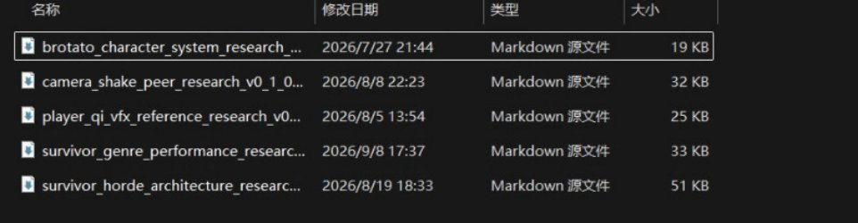
文档维护：跟踪设计、实现与待办
在做了很多这些功课以后，我让 AI 把这些成果总结成了一个设计文档库，正式放进了项目里。项目第一次提交的时候，它的结构很简单，只有一个 docs 文件夹，里面包含的内容大概长这样：
files/docs/
├── 00_PROJECT_BRIEF.md 项目摘要：定位、Demo MVP 边界、设计支柱
├── 01_GDD_DEMO_MVP.md 玩法设计文档：玩家体验到的完整流程
├── 02_CORE_COMBAT_SEQUENCE_SPEC.md 核心战斗与外功周天规格
├── 03_STATS_CULTIVATION_PROFICIENCY_SPEC.md 六维、修炼与武学熟练度规格
├── 04_LOADOUT_SHOP_ITEM_SPEC.md 装配、商店、道具与波后系统规格
├── 05_DATA_TAG_SCHEMA_SPEC.md 标签与数据语义规格
├── 06_CONTENT_SPEC_DEMO_MVP.md Demo MVP 首批内容规格
├── 07_UI_UX_SPEC.md UI / UX 规格
└── 08_CODEX_HANDOFF_BRIEF.md 给 Coding Agent 的交接说明基本上，当你有了这样的一些内容以后，你就可以动手去做一个原型或是 Demo 了。
但后来，这个设计文档库其实经过了好几次大的“升级”——因为开发推进得很快，差不多在开始动手 1 个月以后，我就发现很多文档出现了“漂移”的问题：系统重新设计了、代码也重构了，文档却没跟上。于是我又去问了一次：
我现在的游戏玩法设计是在项目根目录下面，有一个叫做“files”的文件夹，里面放着一系列玩法设计相关的md文档，有基础的，有数值设计的，有武功设计的，有商店系统的等等。
最近我在推进开发的过程中，有很多系统重新设计或者在代码层面重构了，但文档没有跟上。
你会建议我以一种什么样的方式去维护这些文档？它的建议总结起来就是一句话：
设计规格不追流水，Implementation Status 追现实，ADR 追原因，DOC_DEBT 追欠账，README 追可信度。翻译成人话就是：设计文档只写「打算做成什么样」；另开一份，记录「代码里现在实际是什么样」；每个重大决定，写一条「为什么这么改」；来不及更新的文档，先记一笔欠账；最后用一个入口 README 告诉自己，哪份文档什么时候做过什么变更，是否 Up to date；已经过期的文档，就及时退役、删除或者归档。
发展到现在，这套文档又调整了几轮。早期的设计草案已经移出主工程，仓库里主要保留跟当前开发同步更新的内容。只看几个主要入口，现在大概是这样：
docs/
├── dev/
│ ├── README.md 开发记录总入口
│ ├── DEVELOP_DEBT.md 还有哪些问题没解决，怎样才算完成
│ ├── known_mismatches.md 当前实现与设计之间的已知偏差
│ ├── playtest_feedback_log.md 我实际玩过以后提出的问题
│ ├── contracts/ 实现必须遵守的规则与边界
│ ├── plans/
│ │ ├── README.md 各项计划的状态、剩余验收和下一步
│ │ └── … 具体方案、实施过程与验证结果
│ ├── audits/ 审查记录，以及发现问题的证据
│ ├── checklists/ 按版本整理的实机验收清单
│ ├── ledgers/ 素材、内容和缺口的逐项台账
│ ├── references/ 当前开发使用的设计与技术参考
│ ├── roadmaps/ 每个版本准备完成哪些目标
│ └── bench/ 性能测试方案、实测记录与优化决策
├── research/ 对标与机制调研
└── release_notes/ 每个发行版本的更新日志原来的 DOC_DEBT 也变成了 DEVELOP_DEBT，用来记录整个项目从设计到开发的“债务”：哪些功能没做完、哪些内容需要校对、哪些地方缺测试。这些问题现在统一记在一本台账里，再关联到具体的计划和验证记录。
比如 AI 做完一个功能，代码提交了，会先停在 In Review 的状态，经过截图验收或者我实际试玩，确认视觉、手感或者流程，才能变成 Done。
这样后面再让 AI 接手，它就有地方查：现在遵守什么规则、上次做到了哪一步、还有什么问题没解决，以及所谓的“做完了”，到底验证到了什么程度。
如果你也想要为你自己的项目建立一个文档库，那你或许可以让你的 Agent 参考一下这份架构。
从设计文档到可玩原型
有了这些打底，我才敢真正开始让 Agent 写代码。
这时候我做的事情基本上就和现在的“许愿式”编程差不多了，一句很简单的 Prompt 就能让它做出一个非常接近我想象的原型：
标题主菜单、选人选门派、战斗、升级三选一，全都跑通了，虽然满屏幕都是方块和圆圈，但骨架算是立起来了。
可我很快也发现了一个非常致命的问题：
它虽然看起来已经像个游戏了，但根本没办法让我自己玩超过 10 分钟
它不好玩。
所以，我在接下来的几个月里，所做的所有工作，基本都是在往这副骨架上填肌肉，让它变得“好玩”起来。
< 未完待续 | To be continued >
• 性能数据：每一波的帧率摘要。本地记一份，玩家提交反馈时随诊断包附上；再通过 Steam 的匿名聚合，看全体玩家的低帧波次占比。用它定位掉帧，排优化的优先级。
• 玩法数据：武学、道具的选取率和胜率，用来观察平衡和内容方向。
除了用 AI 辅助我完成了这个收集过程以外，我还让 AI 帮助我去对它们做详细的分析、归档，并且为我提供像这样的阶段性报告。
📷
📷
玩家反馈：收集、归类与迭代
另外一个比较重要的部分，则是玩家的反馈。
我在游戏主菜单的「制作人的一封信」里，预埋了一个反馈入口，直达一张飞书表单，分成 Bug、崩溃报告、玩法建议几类，尽量降低大家提交的成本。
这个表单是一个飞书的多维表格，而飞书自己的命令行工具 lark-cli 在登录后是可以自行拉取相关数据甚至是回填标记的。我也利用它，把表格和本地的数据存档连了起来。
这些反馈我同样不用一条条去审核。每天 AI 把数据拉下来、去重、聚类，告诉我这个版本可能有什么问题，哪些已经修掉了，哪些还要继续动，我再来拍板。
📷
📷
其他一些更日常化的工作，可能类似于：玩家在群里说一句话，我复制粘贴给 AI，跟它说：「你评估一下，能做吗？」如果能做，它就会落实到我下一版的更新里。
这些持续收集的反馈和信号，帮我在两个月里密集迭代，解决了很多上线之初的问题，让游戏逐步变成了现在的样子。
九、开发心得：玩家反馈与人的判断
上线前后的反馈
老实说，刚发布这个游戏的时候，我其实并没有对它寄予非常高的期望。
7 月初我在我的社交媒体上第一次发布了这个游戏的宣传片。在那时，我其实并没有看到任何关于这个游戏能受到大家欢迎的信号——评论区里主要都是一些「又多了一个垃圾 AI 游戏」、「浓浓的页游风味」这样的评价，也有人好像并不相信我真的把它做了出来。
📷
而我的频道观众似乎也是关注这个游戏本身的制作过程多过想玩这个游戏本身。直到上线前两天，游戏的愿望单才堪堪超过了 1000 个。
所以那段时间，我其实一直在反复安慰自己。和我太太聊起这个游戏时，我经常搬出那句“一个制作人的前十个作品都是垃圾，所以尽快做完它们吧”，试图跟她解释：像我这种半路出家的人，做出来的第一个游戏，多少应该得到一点宽容。我还会补上一句：这个游戏至少已经帮我做出了两期视频——虽然播放量都很一般。说这些，既是在向她解释，也是在说服自己：这两个月的工作，总归不是毫无价值。
但上线以后，这个游戏所经历的，就是我没曾预料到的了：
• 上线第二天一觉醒来，激活数一个晚上涨到了五六千，抖音上一位做游戏介绍的老哥特意介绍了它，帮我捕获了第一批种子玩家；
• 第三天，就有玩家玩了超过 10 个、20 个小时；
• 上线 5 天左右，玩家在游戏里累计砍掉的敌人，超过了 10 亿只；
• 后台反馈大概三天就收到了 200 多条；
再后来，有非常知名的主播老师在直播中做了试玩，一些国内媒体也先后写了报道，它还上过一次 Steam 首页「人气蹿升的免费游戏」的第二位。很多人是知道这个游戏用了 AI 的，但他们照样愿意下载、玩下去，也认真地给我提意见。
所以现在回头看，AI 固然会影响玩家对一个游戏的第一印象；但最终一款用 AI 做的游戏可以走多远，玩家愿不愿意留下、愿不愿意给予好的评价，最后还是看游戏好不好玩。
📷
人的判断：测试、感受与取舍
这个游戏也教会了我许多事情，其中最重要的一件，或许是 AI 时代人的价值所在。
你固然可以用 AI 帮助你完成一个游戏开发过程中 90%的所谓“工作”。但最终决定这个游戏好不好玩，或者说能不能成功的，可能往往就是剩余要人来决定的那 10%。
我在很多次分享、很多个视频里都反复提到这样一件事情：AI 固然可以在 5 分钟里，给我做出几十个技能的草案、几百个道具的效果，甚至几千字的对话文案。但这些技能，玩家用起来真的爽吗？这个道具让构筑更有意思了，还是只让数字变得更大？这些对话，真的能让玩家感受到我想在剧情里表达的东西吗？
这些问题，AI 回答不了。最终还是得我作为一个人，去测试、去感受、去拍板。
📷
所以，当 AI 可以帮我们做程序、美术、动画、音乐，甚至承担上架和运营工作时，对一个游戏来说，最重要的是什么呢？
我觉得，是人啊。
那个知道游戏到底好不好玩，并且愿意为了一个好玩的游戏，不断努力迭代，付出这些时间精力的人啊。
现在对于想做游戏的独立开发者们来说，我觉得真的是一个最好的时代了。换在 10 年前、20 年前，光是掌握做游戏所需要的一个技能分支，可能就要几个月甚至几年；只靠一个人的力量去开发一款游戏，简直无法想象。
但在今天，只要你愿意付出时间、努力和耐心，再借助 AI，哪怕你只是一个人，也可能真的撬动以往只有大公司、大团队才能做到的事情。
如果这篇文章也让你想起了一些你自己曾经有过的、想去做点什么的念头，我想跟你说：快去做吧。我这种人都能把一个游戏做出来、走到上架这一步，你也一定可以的。
感谢你看到最后。因为篇幅所限，这篇文章介绍的流程很长，难免有一些细节没能讲透。但如果你对这里面的一些技术细节感兴趣，请一定要通过留言和我交流。知无不言！
也欢迎关注我。后续我会继续在这里，和你分享这一路上的实践与体会。
祝你也能做出那个你想要的游戏 ;-)
（2/4）万字复盘：0代码基础，如何用 AI 做出10万人玩过的独立游戏？我的工作流程 + Vibe Coding 开发心得
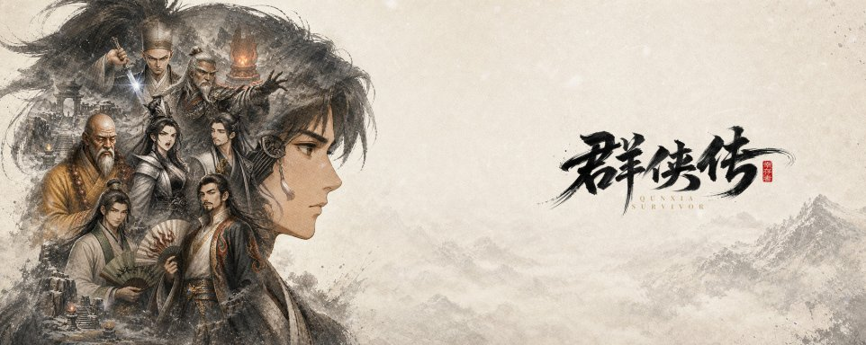
今年 8 月，我做的第一款单机独立游戏《群侠传：幸存者》在 Steam 上线了，以抢先体验（EA）的形式免费开放。
截至本文写作时，它在 Steam 上有 2100 多条评测，97% 是好评，被标记为“好评如潮”。累计超过 20 万玩家入库。
这个数据其实远远超出了我当时对它的预期。临近发售时，它的愿望单才堪堪超过 1000 个。一开始，我只是把它当作探索游戏开发和 Vibe Coding 的一个小作业，从没想过会有这么多人玩过它，还愿意给出积极的评价。
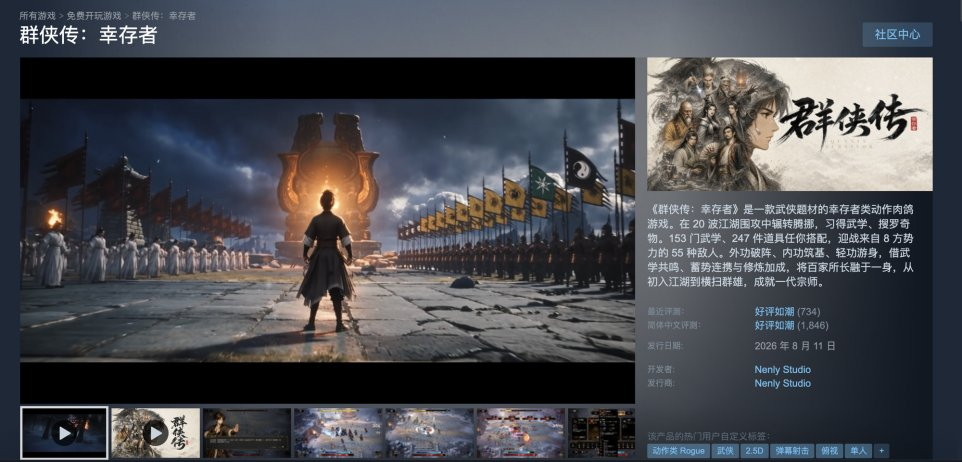
今年 4 月，给这个项目提交第一个 Commit 的时候，我没有任何游戏开发经验，没打开过游戏引擎，甚至一行代码也没写过，是个彻头彻尾的“小白”。但那时的我就想试试看，能不能用现有的这些 AI 工具，把我想要的这个游戏给做出来。
从结果看我应该是成功了——这里面的代码、美术、动画、音乐和配音，绝大部分都是我使用一系列的 AI 模型、Agent，在大约 3 个月里完成的。
早在今年 7 月的一条视频里，我就和大家分享过制作这个游戏的全套工作流程。但受视频篇幅和呈现形式所限，很多技术细节没能完整交代。之前想做的系列视频，也因为一些原因迟迟未能动工……
所以在这篇文章里，我想尽可能完整地写下这套工作流程，分享过程中碰到的问题，以及最后的解决方式：早期的需求和调研怎么做，代码怎么交给 Agent 写，美术和动画怎么从 AI 生成的素材变成游戏里能用的成品，以及音频和配音是怎么处理的，最后再到上线以后，AI 又怎么帮我做一些发布、运营的工作。每个环节用到的模型、工具，实践中行之有效的 Prompt，还有踩过的坑、绕过的弯路，我都尽量写进来了。
虽然这个游戏体量很小，题材略显老套，目前也还比较粗糙，但我仍然希望这套制作流程，能给正在或打算用 AI 做游戏的朋友一些帮助。
（P.S. 第一次写这么长的文章。全文较长，可以按大纲挑感兴趣的部分读。如果里面的经验和做法对你有帮助，欢迎点个赞或者关注！）
先上个大纲：
1. 游戏介绍与项目背景
2. 开发时间线、技术栈与工作流
3. 需求澄清与对标调研
4. AI Coding：引擎、模型与协作方式
5. AI 美术：风格统一与资产制作
6. AI 动画、特效与 CG
7. AI 音频：音乐、音效与配音
8. AI 辅助发布与运营
9. 开发心得：玩家反馈与人的判断
四、AI Coding：引擎、模型与协作方式
先从开发层面的工作讲起。文档里所提到的很多系统、玩法，在原型里的实现都相当粗糙，需要进一步的细化、深化，需要很多代码工作让它们变得丰富；此外，后续包括美术、动画和音频在内的所有资产接入，也都和代码高度相关。
下面聊聊，在推进这个项目上线的过程中，我是怎么工作的。
引擎选择：Godot 4
先说引擎的选择。原型其实是我让 Agent 基于 HTML 去搭建的。事实上，今天有很大一部分 Vibe Coding 产出的小游戏都可以基于 HTML 去运行，游戏引擎并不是一个“必选项”，只是可能有利于我想做的这种资产和数据量都比较重的“单机游戏”。
但当时的我其实对这些东西还知之甚少，只知道大家好像做游戏都要用引擎，加上 GPT 也让我用，那我就用了。
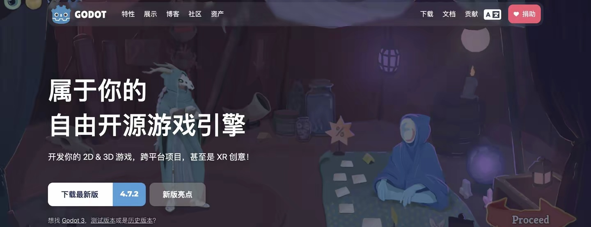
我用的是 Godot 4，原因其实就两个：
一是开源免费。MIT 协议，不抽成。赚不赚钱先另说，至少现在不收我一笔订阅费（没错说的就是你 Adobe）。
二是它的一切几乎都是明文。这个优势，是我对 AI Coding 了解更多以后才后知后觉发现的。它的脚本是文本，场景是文本，资源配置也是文本，比如一个敌人的场景文件，打开就是这样的：
[gd_scene load_steps=4 format=3]
[ext_resource type="Script" path="res://scripts/components/enemy.gd" id="1"]
[ext_resource type="Script" path="res://scripts/components/health_component.gd" id="2"]
[node name="Enemy" type="Node2D"]
script = ExtResource("1")
[node name="HealthComponent" type="Node" parent="."]
script = ExtResource("2")
[node name="VisualRoot" type="Node2D" parent="."]
[node name="Sprite" type="Sprite2D" parent="VisualRoot"]
centered = true这对一个不会写代码、主要靠 Agent 干活的人来说太重要了：在 Agent 眼里，整个游戏就是一堆它读得懂的文本，它可以直接读、直接改、直接接管，不需要我在编辑器里点来点去。
在整个开发过程中，我的操作方式基本上是：
用 Godot 建立项目文件夹后，用 Codex 一类的 Agent 选定这个项目文件夹的根目录，然后开始对话，让 Agent 改这改那。改到差不多了，就进编辑器，F5（开始主场景）一下，验收实机效果。
没有用 MCP。多数时候也不需要 Computer Use。
我其实并不知道这么做科不科学，因为大家似乎都还是会在引擎里靠图形化的界面去做一些编辑、调整。但至少我把这个项目推进到目前的状态，都沿用了这样的一套引擎操作逻辑。它能基本上满足我现阶段的一些需要。
模型分工：从早期配置到规划与执行
5 到 6 月做主体开发的时候，我的模型配置其实简单得多：Codex（GPT 5.5）负责代码理解、规划和复盘，Claude Opus 4.8 负责实现、重构和排错。因为当时大家普遍认为 GPT 的“大局观”更强，而 A 家的模型编码能力会更硬。
8 月份上架的那个第一版的程序里，我个人感觉 GPT 的模型贡献了 7-8 成，A 家模型贡献了 2-3 成吧。
后来模型一代代地换，我手里的模型分工也慢慢经历了几次迭代。现在（2026 年 10 月），我大致把它们分成两层：
• 全盘规划：Claude Fable 5.1、GPT 6 Astra、Kimi K3(.1)。
• 主要工作：读代码、做调研、拆方案，最后写成一份执行计划。
• 长程执行：Claude Opus 5.5、GPT 6.1 Sol、GLM 5.3。
• 主要工作：拿着计划去写代码、跑验证、分批提交。
之所以区分“全盘规划”和“长程执行”，是因为我现在的绝大部分新功能的构建和新内容的填充都有一定的规模，没有办法在单一的会话里快速做完。那这个时候就需要一个文档性的“开发规划”，为跨会话乃至跨 Agent 的工作留下可跟踪的记录。
在规划层我用的是最高级的模型，由它们来拟定开发方案，确保执行路线的可靠；而具体的执行，我则倾向于交给擅长长程执行、也稍微便宜一点的次一级模型。至于排 Bug、一些小的文案层修改这样的边缘性工作，我基本上也是丢给这一层的模型去做了。
多 Agent 协作：统一 AGENTS.md 与 Skill
工具上我其实 Claude Code、Codex、Kimi Code 和 ZCode 都在用，最近也有打算试试 Cursor 和反重力。主要原因还是因为现在各家的 Coding Plan 都和自己的 Agent 应用高度绑定。没法不用嘛。
但其实这些 Agent 是可以在同一个仓库作为“同事”相处，一起推进一个项目的。而让它们“和谐融洽”的关键，就在于仓库里的规则文件 AGENTS.md （原来为了 A 家还得单独维护一份 CLAUDE.md，但九月以后他们也兼容了，现在是不用了）；每个 Coding Agent 进仓库的第一件事，是读根目录的 AGENTS.md，以此了解这个仓库现在正在做的事情以及大致的项目结构。
我的 AGENTS.md 最初是从卡兹克老师二三月份发的一篇文章里抄来的作业，后面又杂七杂八融了一些我自己的东西进去，开头是这样写的：
## 关于我
我叫 Nenly，是一个 AI 创意人和自媒体人。
我之前的主要工作是自媒体 AI 博主、平面设计师和视频后期，没有正式的 Coding 或开发背景。
我现在正在尝试上手 Vibe Coding，借助 coding agent 主要做基于个人兴趣的独立游戏开发，以及工作、生活中会用到的一些轻量级插件和小工具。
## 思维原则
所有决策都从问题本质出发，不因为“惯例如此”就照搬。
始终回到问题本身：到底要解决什么，最直接的路径是什么，如果从零开始设计会怎么做。
不要谄媚。不要机械地夸我的想法好，不要使用“这是个很好的问题”或“当然可以”这类开场。
给我真实判断。方案有问题就直接指出来；如果有更好的做法，直接说，不用等我问。基本上就是大白话，告诉 Agent 我是谁、我懂什么不懂什么，让它按照我能读懂的方式，给方案和解释，确保我们之间沟通顺畅。
后面才是一些关于项目的内容。大家看内容，应该就知道，主要写了些啥了：
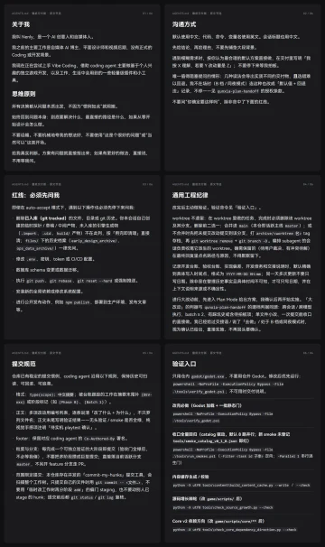
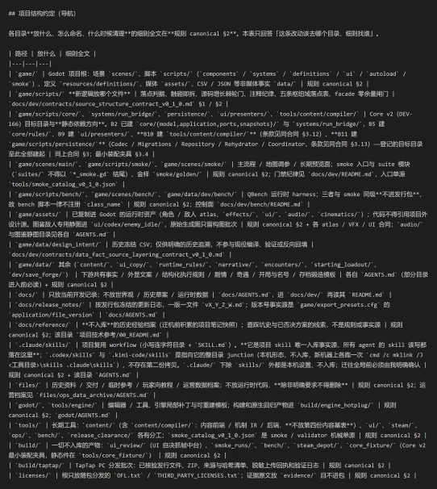
这份 AGENTS.md，我也几乎没有怎么手动维护过，但倒是让 Agent 主动对它做了几次清理。
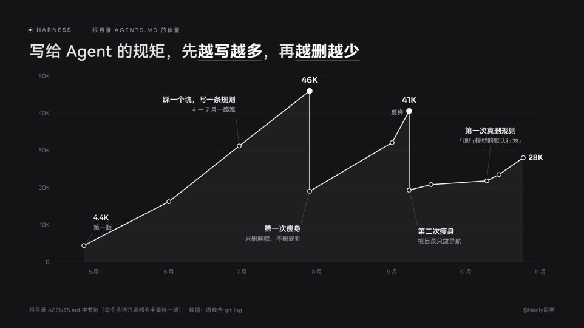
因为一个比较公认的观点是：模型越强，所需要的 Harness 反而越简单。旧版的AGENTS.md 后面会给 Agent 设很多约束、限制和红线，主要是为了防止原来模型在还比较笨的情况下把项目搞坏。但其实今天的一线模型基本上都不会犯这些很低级的错误了。留在里面徒增上下文，还会模糊真正的重点。
Skill：保留项目中反复用到的流程
和 AGENTS.md 一起越删越少的，其实还有 Skill。
早期开发的时候我也热衷于去类似 skills.sh 一类的网站上找很多好像和写代码、游戏开发和 Godot 开发沾边的 Skill 装上，但后来我才发现它们并没有起到很大的作用。
说起来其实有点搞笑，我发现这一点是因为点进 Agent 后台看 Skill 调用次数，然后才发现大多数 Skill 由于触发机制设计的问题其实根本没有被我用上过几次。而独留的几个 Skill，在某一次模型迭代以后（大约是 Opus5 左右）也被我删掉了。
然后什么都没有发生。
但 Skill 我个人感觉仍然是一个非常必要的工具，因为它确实可以把一个明确路径封装成一套可以随时复用的方法论，降低 Agent 的思考负担（同时让产出更稳）。
所以我目前库里面保留下来的 Skill，基本上只有我自己用 Skill-creator 写的一系列适用于我自己项目，而且多数时候是解决某些犄角旮旯的小问题——比如素材导入压缩管线、性能基准测试、封包上传等需求的 Skill。
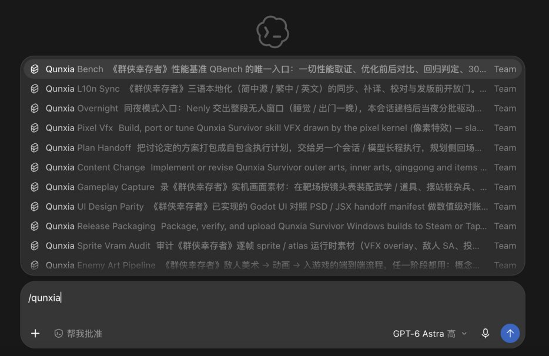
像那种所谓什么 game-design、game-theory、game-development、Godot-development 这种大而泛的 Skill 基本已经没有在用了，一方面是因为现在的模型越来越强，很多通用的方法论它已经掌握了，甚至比这些 Skill 所提供的做得还要更好（所以这些 Skilll 反而还可能限制它）。
但我仍然有一个“通用”Skill 是一直保留在库里的，我给它起的名字叫 nenly-game-studio。
它则主要是帮我沉淀做项目时积累的经验和踩过的坑——项目里每完成一次有意义的改动，Agent 都要回答三个问题：换个游戏还成立吗？换个引擎还成立吗？换个美术流程还成立吗？过得了这三问的，才会回流进这个 skill 包。这样的回流记录，到现在已经攒了三千七百多条，其中的 900 多条是被正式登记了的。
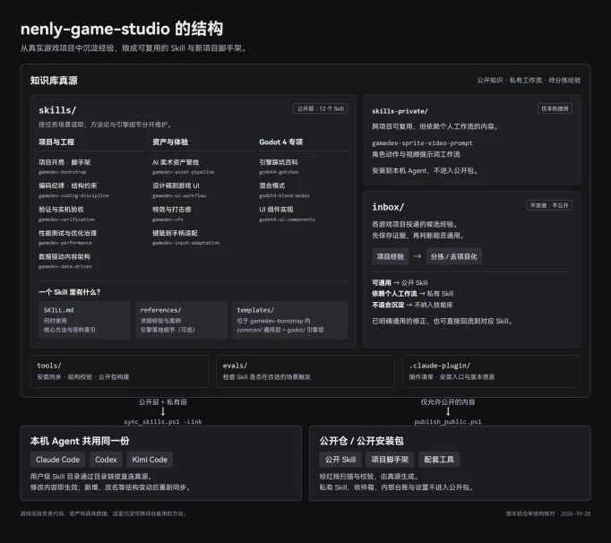
目前这个 skill 我还在打磨，等到时机合适的时候或许会考虑把它开源出来。（如果你觉得它可能会对你有帮助的话，可以在评论里让我知道！）
在多 Agent 工作的情况下，我项目里的 skill 也只存一份真源，放在 .claude/skills，另外几家用目录链接（junction）指过去，以此实现高效同步。
代码的问题解决了以后，我便着手开始攻克游戏开发过程中可以说是最难的一道关——美术。
五、AI 美术：风格统一与资产制作
风格锚定：像素画风与光影质感
做一款游戏要的美术素材非常多：角色、敌人、场景、UI、道具图标……所以动手之前，我先给整个游戏锚定了一个视觉风格：类似《歧路旅人》那种 HD-2D 的像素风。
选它，一方面是因为我确实很喜欢《歧路旅人》；另一方面，其实是因为像素风天然对 AI 生成的素材有一点「遮瑕」的作用——它的外表会让大家对 AI 生成过程中产生的一些小瑕疵，包括细碎的抖动、纹理和某些不和谐，有更大的宽容度。
当然，我只能说它是一个【类似】HD-2D 的像素风。因为它既不是真正的像素风——没有统一的像素密度和规整的网格——也不是真正的 HD-2D——真正的 HD-2D 其实是一套涉及场景层次结构和光影渲染的复杂工程。我只是用了一些比较偷鸡取巧的方式把它变成了我游戏的一部分。这个偷鸡的方式我在下面的环节里会和大家分享。
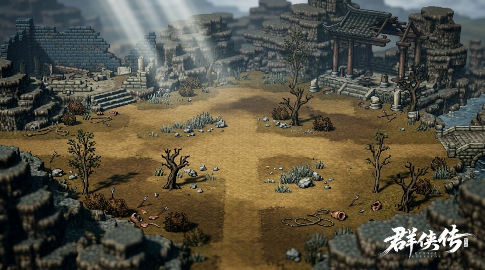
▲ 锚定风格时生成的样张。
风格定下来，后面所有的素材才算有了一把统一的尺子。而我也把类似这样的风格通过 Agent 提炼成了一段风格锚，在后续生成各种素材的时候原封不动地放在每一条后续生图 Prompt 的开头：
以类似 HD-2D 高精度像素风的美术风格为唯一风格锚定：精细手绘像素、细腻的像素分层上色与轻微抖动（dithering），清晰的深色像素描边，柔和电影感的暖色打光与轻微边缘光，略带写实比例的精致像素角色（非粗像素、非 Q 版大头），剪影干净可读、质感古朴厚重。模型上，我当时使用的主力是 GPT-Image-2 和 Nano Banana Pro / Nano Banana 2。不得不说，GPT 在目前的多模态领域还是有比较统治力的。但它唯一的缺点就是那个甩不掉的“脏”纹理——所以我没有用它去做诸如地图这样的大面积内容。地图大部分时候是香蕉系做的。
工具上，我用的是某些无限画布类的工具。萝卜青菜各有所爱吧。因为我是做设计出身的，可能这种工具会更符合我作为设计师的作图习惯。
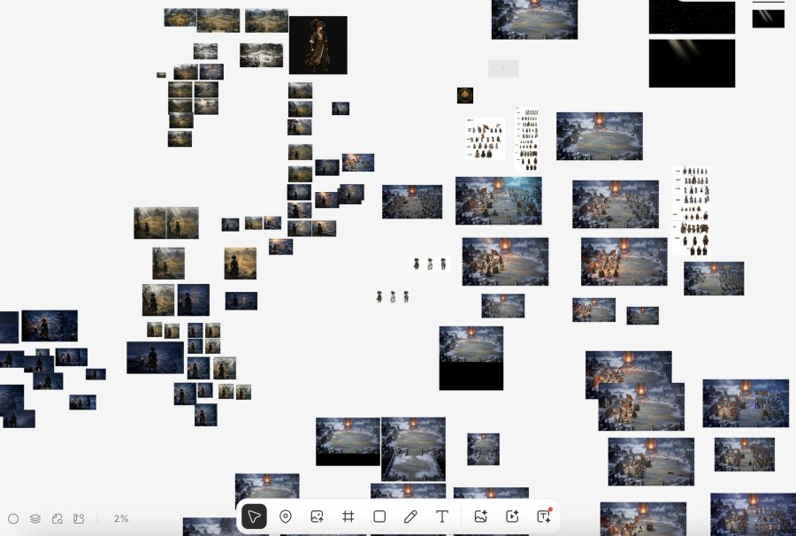
角色与敌人：概念设计、风格迁移与抠图
游戏里的资产大头，是角色和敌人的形象和动作。此处以一组敌人的设计为例，它们从一个想法，到一个设计，再到游戏里的资产，可能会经过如下三步。
1. 概念稿。风格锚 + 这个门派整体的视觉基调 + 逐个敌人的外貌、服装、侧身动势和识别点（武器、道具），就可以生成他们的概念形象。例如：
（开头是上面那段风格锚）
一、少林派外围 门派前缀:
整体灰黄、赭黄、土金为主的寺院武僧朴素戒律感——僧衣、布鞋、念珠、长棍/戒刀为识别点;
色彩克制不华丽,普通僧兵以灰黄赭黄为主,像一队纪律严明的寺院武僧。
1. 少林棍僧 shaolin_staff_monk · 〔杂兵〕
光头僧人,姿态端正,灰黄僧衣布鞋、袖口收紧;侧身持一根贯穿整个剪影的长棍作近身横扫前摇,长棍是最重要识别点,整体朴素无华丽装饰,体现基础武僧的纪律稳重。
2. 戒刀僧 shaolin_jiedao_monk · 〔杂兵·冲锋〕
比棍僧更凶猛,光头僧人轮廓,灰黄僧衣外加短披护肩;站姿更低,手持宽背戒刀、刀尖斜向前,侧身作斜向突进蓄势,横刀扫出金灰刀光,与棍僧长杆剪影清楚区分。
3. 念珠僧 shaolin_beads_monk · 〔远程〕
站位靠后的清瘦僧人,僧衣偏灰黄灰白,身体剪影较窄;侧身双手捻一串长念珠作发弹前摇,念珠泛暖金小光点,靠念珠与弹体特效与棍僧区分。
4. 僧医 shaolin_medic_monk · 〔治疗〕
年龄略长、眉目温和的支援僧,灰白僧衣外罩暖灰黄短袍,背药囊与小木箱、腰挂药葫芦;侧身护着药囊行走,治疗时脚下浮现柔和暖金圈,药囊木箱为核心识别点。
5. 罗汉护法僧 shaolin_luohan_guard · 〔壮汉·厚血〕
体型比普通棍僧大一圈,肩背厚实、脖颈挂大颗念珠,表情沉稳;深黄僧衣加灰褐护腕,手持粗重长棍或降魔杖,侧身重棍下压、步伐沉稳,轮廓宽厚抗压,占更多画面位置。
6. 罗汉阵眼 shaolin_luohan_anchor · 〔召唤·固定〕
固定诵经的阵法僧,可坐可立,身前摆木鱼或小经幡;深黄袈裟加灰色内袍,周身金色阵纹;侧身合掌诵经的静态姿态,身体不必大但脚下金色阵圈醒目,突出"先破阵眼"的目标感。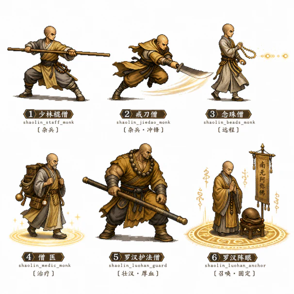
一张图最多放 4 到 6 个普通体型的敌人；BOSS 单独写一条，写得更细。比如第 17 波的 BOSS（司辰观主）：
（开头是上面那段风格锚）
司辰观主·玄寂掌门 sichen_leader · 〔司辰观主 / 单挑 BOSS〕
司辰观掌门、出家落发的年长女尼（尼姑相，落发、无任何世俗发饰），面色坚硬冷酷、不怒自威，眼神凌厉酷烈；身形瘦削而挺拔，立姿如一柄出鞘的剑，素净不施粉黛。
着装：贴身淡米黄素僧袍打底、冷灰白内衬，外罩一件黑灰长袍 / 深灰披肩（出家僧尼的清苦素服），衣料如旧绢素麻，墨灰压边收住轮廓，衣摆利落不臃肿；通身少装饰，只以冷峻气度压场。
武器（核心识别点）：手持一柄细长锋利的裁星剑，剑身极薄极直、剑光极亮冷白、剑刃隐隐透出一线寒芒，是全图最亮最锐的视觉焦点。
动势：侧身持剑、剑尖斜斜下引，作起手凝寒芒的预备姿态——身形微沉、僧袍微动，冷白寒芒沿剑刃聚起，蓄势待发。
气质关键词：冷峻、威严、酷烈、决绝；出家女尼的清苦肃杀，与凌厉无情的剑意合一。
剪影要求：整体剪影简洁、锋利、修长，一眼区别于其他同门弟子；少而精的线条、强压迫感，突出"快、狠、绝"。她是本篇的核心 BOSS，需要最高的辨识度与气场。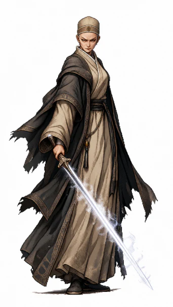
2. 风格迁移。概念稿和游戏主角的画风、比例，往往还对不上。我的办法是，让生图模型参考已经生成好的主角精灵图，做一次“风格迁移”。
早期我尝试使用「把图 1 变成图 2 的风格」这样的操作，发现成果总是有点不如意。直到我解锁了「把图 2 里的敌人加到图 1 主角右侧的空白处，并转成图 1 的画风」这样一个比较邪门的小技巧，借着主角在场，同时把风格和相对体型都校准好，才得到了比较符合我想要效果的图片：
把图2中的所有敌人加入到图1中的游戏主角右侧空白处，并将这些敌人的风格转化成和图1主角相似的风格（类似《歧路旅人 Octopath Traveler》中的HD-2D像素风，48*48像素艺术比例感，头身比接近1:3，小兵体型和主角接近，精英和BOSS怪物体型可以更大）。
(character lineup)：所有角色全身、侧视、面朝右、自然中性站立、不做任何动作，沿同一地平线横向一排、均匀间隔、互不重叠，彼此保持正确的相对身高与体型。
除了主角以外的角色，从左到右依次为：①……；②……；③……
纯白色背景，无地面阴影，2D 俯视角游戏像素角色素材，所有角色画风、笔触、像素密度与打光完全统一。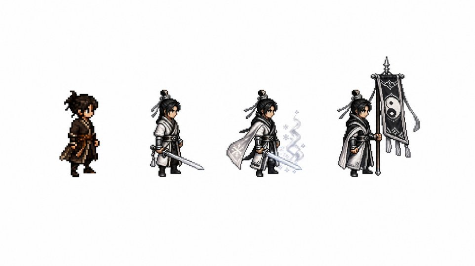
3. 手工编辑。拿到画风统一的一排角色之后，我会手工把每个角色抠出来、微调身体各部分比例，或者是稍微编辑一下，改掉自己不满意的地方。如果还不满意，就再次抽卡生图，直到得到一组符合自己需要的角色精灵图。
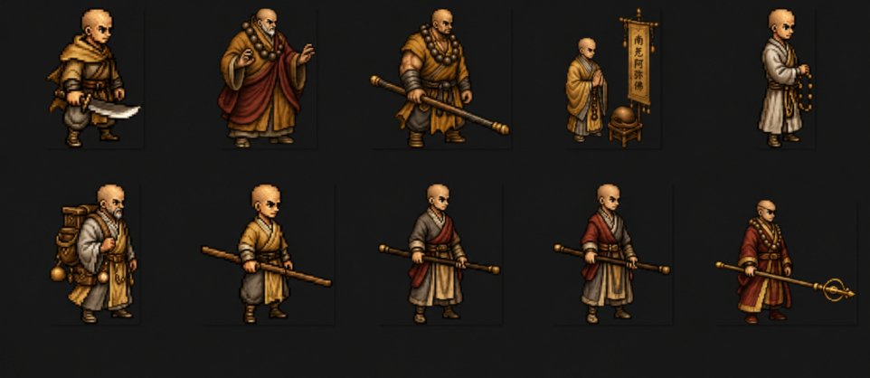
场景制作：分层、遮挡与可行走区域
我的场景同样是先出一张概念图来固定设计的。但如果你只把它导入到 Agent 中，那它只能变成一个铺在底下的“背景图”，并没有办法变成真正的游戏场景。在我摸索了一些方式以后，我得出了一个「靠生图模型做分层，再分层接入游戏中」的工作流程。
比如雪山焚天坛，就拆成了地面和地形底图、前景遮挡、建筑和旗帜、坛火的光照、体积光和飘雪好几层，再写一份合成说明交给 Coding Agent 拼回去。这样地图就不再是一张扁平的背景图，角色可以走到建筑后面、被前景挡住。
拆图的 Prompt 其实非常简单，基本可以用一个句式概括：
帮我把图中的……单独分离到纯白/纯黑色背景上，保持相对位置不变。纯白主要是用于抠图，纯黑则一般用于一些光效、氛围层，用加算一类的混合模式融入。
对于一些比较复杂的地形，我还会手绘一张「可行走区域」遮罩，告诉程序哪里能走、哪里不能走。
▲ 一张地图从概念图到分层合成。最后绿色的部分是可行走区域。
用这样的方式，我后续又陆续开发了好几个地图副本，比如主线 18 波以后起火的「燃」版地图、无尽模式中暗红色幻象里的「崩」版和坛火熄灭以后的雪景「荒」版。里面的动态元素，都是类似分层再加上程序化动效或者序列帧生成的结果。
▲ 同一个构筑、同一个随机种子：焚天坛的「燃」「崩」「荒」。
UI 制作：从设计稿到组件库
UI 是花了我最多时间的环节之一。最早，我从战斗主界面的 HUD 开始制作 UI 元素。我的大致工作流程如下：
1. 先有一版 UI 原型：哪里放什么、每一块是干什么的，用色块和文字标注写清楚；
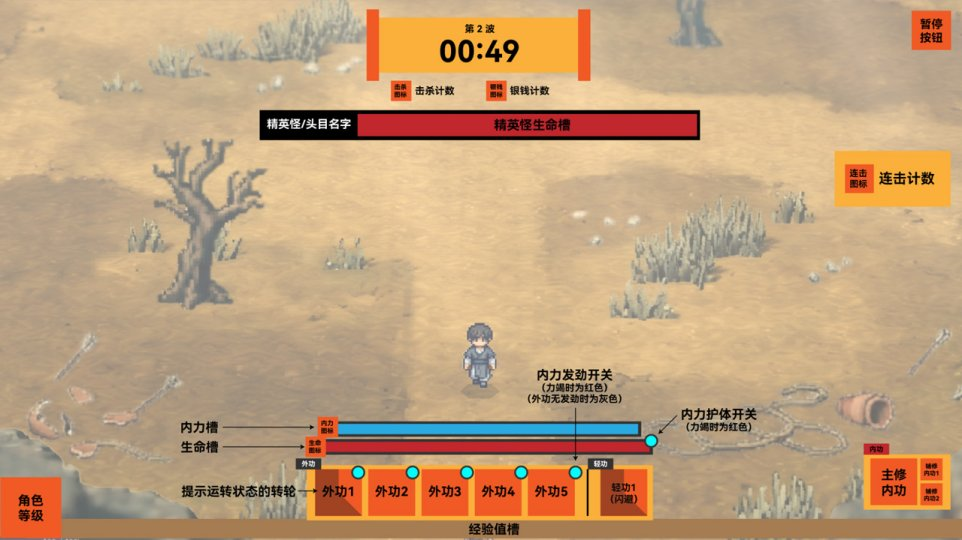
2. 让 AI 使用参考生图的模式，照着原型出整页的设计稿，并在提示词里写明白我对这个设计的所有构想和需要
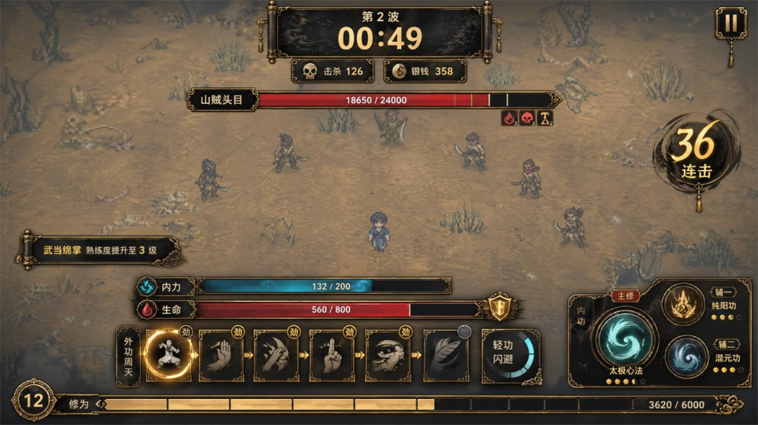
为一款 2D 武侠 / 江湖题材、小型竞技场幸存者 Roguelite 游戏设计一套完整的战斗 HUD 界面。界面结构可以参考图1，界面风格和游戏的其他UI组件（图2）对齐。
画面比例为 16:9，分辨率参考 1920×1080。背景是一张淡化处理的 2D 竞技场战斗场景，玩家角色位于画面中央偏下，HUD 作为半透明叠加层覆盖在画面边缘，不遮挡中央战斗区域。整体目标是清楚表达：生命、内力、外功周天、轻功闪避、主辅内功、波次时间、击杀数、银钱、精英怪血条、连击数、修为经验与等级。
整体 UI 风格：
采用东方武侠、古籍卷轴、黑金描边、墨色石板、鎏金铜饰、云纹、山水暗纹、细 tassel 吊坠装饰的风格。参考黑色磨砂底板 + 古铜金边框 + 水墨山峦暗纹。HUD 要有江湖古典感，但不能过度厚重，保持游戏战斗时的可读性。所有框体边缘使用清晰的金属描边，角部有少量中式云纹和如意纹装饰。面板内部以深墨黑、半透明黑、淡水墨纹理为主。关键高亮使用鎏金边框和轻微发光，不要使用现代科幻 UI，不要使用西式魔法风格。
布局总原则：
HUD 集中在画面边缘，中央大部分区域保持干净。底部是主要战斗资源与武学运转区域；顶部中央是波次、时间和精英怪信息；右下角是内功状态；右侧偏上是连击数；右上角是暂停按钮；最底部横跨全屏是修为 / 经验槽。
一、最底部修为经验槽：
在屏幕最底边放置一条横跨整个画面宽度的细长修为槽，也可理解为经验槽。修为槽高度较低，占屏幕高度约 2%–3%，不要遮挡战斗。修为槽被分成若干细格，方便玩家看出当前经验进度。槽体用古铜金边框，内部填充为温润金色或淡玉色进度。最左侧嵌入一个较大的圆形或方形等级徽章，显示玩家当前等级数字，例如“12”或“Lv 12”。等级徽章像一枚武侠门派令牌，边缘有金色纹样，底色为深墨黑或暗金色。
二、底部中央生命 / 内力 / 外功周天 / 轻功区：
画面底部中央放置主要战斗 HUD，整体宽度约为屏幕的 45%–55%，高度约为屏幕的 14%–18%。这个区域从上到下依次为：内力槽、生命槽、外功周天槽与轻功槽。
内力槽：
内力槽位于生命槽上方，长度略短于生命槽，居中对齐。左侧有一个小型“内力”图标，可以是丹田、气旋、蓝色内劲珠或水墨气流图案。内力槽内部使用蓝绿色或青色能量填充，带有柔和流动的气感。内力槽在正常状态下清澈明亮；当内力快速消耗时出现短暂气流收缩效果；当角色进入“力竭”时，内力槽变暗并出现红色裂纹或红色封印边框，槽体中央可显示小字“力竭”。
生命槽：
生命槽位于内力槽下方，长度与下方外功 + 轻功槽组基本等宽，是底部最重要的生存信息。左侧有“生命”图标，可以是心脉、血滴、护身符或红色印章。生命槽内部使用深红色或朱砂红填充，边框略厚，必须一眼可读。生命槽右端叠放一个小型“护体”状态徽记，图标可以是盾形、护身气罩或金色内劲罩。护体可用时徽记为金色或青金色；护体正在触发时有短暂发光；力竭时护体徽记变红、破裂、带锁或被封印；如果设计为可关闭护体，则关闭状态为灰色。
外功周天槽：
生命槽下方是 5 个外功槽，横向排列在左侧，表示外功 1 到外功 5 的周天顺序。每个外功槽是方形或略宽的圆角方形图标框，尺寸约 64–80px，使用黑色底板、古铜金边、角部云纹。每个槽内放置武学图标，例如拳、掌、爪、指、腿、掌风等水墨剪影图标。空槽显示暗色空框和淡淡的“空”符号，不自动补普通攻击。
外功槽必须表现“周天序列”，不要表现成五个独立冷却技能。当前正在释放的外功槽使用明显金色高亮边框，外框出现顺时针旋转一圈的半透明时钟式运转蒙版，代表这一门外功的动作模组正在执行；当这一招完整打完，蒙版正好转满一圈，然后高亮移动到下一个外功槽。未轮到的外功槽保持暗色待机，只显示排队状态，不显示冷却转圈。当前即将释放的下一槽可以有轻微金色预亮。外功槽之间可以用很细的金色流线、气脉线或小圆点连接，强调“外功周天”的循环感。
每个外功槽右上角有一个很小的“发劲”状态珠或小开关，图标可以写作“劲”或用内力气珠表示。状态分为四种：
1. 发劲开启且内力充足：小珠为青金色或金色，轻微发光。
2. 发劲关闭：小珠为灰色。
3. 该外功不支持发劲：小珠隐藏或显示极淡灰色空位。
4. 力竭或内力不足导致无法发劲：小珠变红，带裂纹、叉号或锁形封印。
当某门外功真正触发发劲时，该槽图标边框出现短暂金色冲击光，发劲珠闪烁一下。
轻功 / 闪避槽：
在 5 个外功槽右侧放置 1 个轻功槽，与外功槽有明确分隔线。轻功槽图标大小接近外功槽，但可以略窄或单独用更灵动的框体。图标表现轻功、步法、羽翼、残影、风纹或足迹。轻功槽上有时钟式半透明蒙版，用于提示闪避冷却状态。和外功槽不同，轻功槽的转圈代表闪避冷却恢复；冷却完成时图标明亮，冷却中图标变暗并有倒计时蒙版。轻功槽旁边可有小标签“轻功”或“闪避”。
三、右下角内功状态区：
右下角放置 3 个内功图标，表示 1 个主修内功和 2 个辅修内功。主修内功图标较大，位于三者中央或左侧，尺寸约为 72–88px；两个辅修内功图标较小，尺寸约为 44–56px，位于主修图标右侧上下排列，或环绕主修图标左右下方。主修图标边框更华丽，有金色主修印章或“主修”小标签；辅修图标边框较细，有“辅一”“辅二”或小型副修标识。
内功图标不是技能按钮，不使用冷却转圈。它们表现当前装配的内功状态、稀有度和等级。每个内功图标底部可以有 1–5 个小点表示熟练度等级。主修内功可以有淡淡的内力气旋背景，表示核心效果正在生效；辅修内功只显示较弱光效，表示仅非核心效果生效。整体风格仍为黑金框、墨纹底、气旋图标。
四、顶部中央波次 / 时间 / 击杀 / 银钱区：
画面顶部中央放置一块卷轴式主信息面板，宽度约为屏幕 20%–30%，高度约为屏幕 8%–10%。面板形状像横向短卷轴或古典匾额，黑金或暗金边框，内部为半透明深色底。面板上方显示当前波次，例如“第 2 波”；面板中央显示大号剩余时间，例如“00:49”。时间数字必须是全 HUD 中最清晰的文字之一，黑底浅色字或浅底深色字均可，但要保证可读。
波次时间面板下方放置两个小计数：击杀数和银钱。击杀数使用小型骷髅、刀痕或敌人头像图标；银钱使用铜钱、银锭或钱袋图标。两个计数横向排列，尺寸小于时间，不抢主信息。图标保持像素风可读性，但外框仍与黑金武侠 HUD 统一。
五、精英怪 / 首领血条：
当场上存在精英怪或首领时，在顶部中央信息面板下方出现精英怪血条。血条居中，宽度约为屏幕 35%–45%，高度较低。左侧有一块黑金名牌显示精英怪或首领名字，例如“山贼头目”或“欧阳克”；右侧是长条生命槽，红色填充，金属边框。血条内部可以有细分段，首领战可以有阶段刻度。血条下方或右侧可以放置少量负面效果小图标，例如缓速、失衡、破甲、定身、中毒、寒毒，但不要让普通敌人的状态信息挤满画面。
六、右上角暂停按钮：
右上角放置小型暂停按钮，尺寸约为 48–64px。按钮为黑色或暗金底，金色描边，图标为简洁的暂停符号或“暂停”二字。不要做成过大的橙色方块，不要抢战斗信息。
七、右侧偏上连击计数：
在画面右侧偏上三分之一位置放置连击计数组件。它不是常驻大面板，而是当连击数大于 0 或玩家处于连击构筑时出现。样式像一枚竖向武侠印章或小型战斗令牌，外框为金色，内部为深墨黑。显示大号连击数字，例如“36”，旁边写“连击”。组件周围有一圈逐渐衰减的细环或墨迹残影，表示连击即将断掉的倒计时。连击越高，边框光效越强，但不要遮挡敌人。
八、战斗即时提示：
在底部 HUD 上方或画面左下偏中位置预留一个小型战斗提示区域，用于短暂显示“武当绵掌 熟练度提升至 3 级”“力竭”“发劲触发”等信息。提示框为小卷轴或黑金窄条，出现后很快淡出，不要弹出阻断战斗的大窗口。
九、信息层级：
第一优先级：生命、内力、当前释放的外功、轻功冷却、波次时间。
第二优先级：发劲开关状态、护体状态、精英怪血条、击杀数、银钱。
第三优先级：内功装配状态、连击数、熟练度升级提示。
所有 UI 元素必须大小清晰、图标轮廓明确，适合真实游戏内使用。不要把所有装饰都做得很复杂；边框可以华丽，但图标与数值必须简洁可读。
十、文字要求：
使用中文武侠术语作为占位，例如“第 2 波”“00:49”“击杀”“银钱”“主修内功”“辅修内功”“外功”“轻功”“内力”“生命”“力竭”“连击”。如果 AI 无法准确生成中文文字，可以用清晰的占位文字块表示，后期由 UI 实现替换真实字体。整体避免英文 UI 词汇，不要出现 CD、Build、Debuff 等现代英文词。
画面最终效果：
一张完整的战斗 HUD 概念图，黑金水墨武侠风，底部中央有外功周天和轻功，生命内力条清楚，最底部有分段修为经验槽和等级徽章，右下角有主辅内功，顶部中央有波次时间和精英血条，右上角有暂停按钮，右侧有连击计数。整体既有东方武侠古典感，又适合幸存者类高频战斗阅读。3. 用编辑模型把整页设计「拆」成一个个能用的零件——框体、血条、按钮、图标底座。思路和拆场景很像，就是用「帮我把……分离到纯白色背景上」这样的方式去做。
1. （四五月份那会儿模型能力无法直出透明底图片，所以还需要在提示词里加入纯白色/纯绿色/洋红色背景这样的元素再抠图——但现在应该可以直接生成透明底的了）
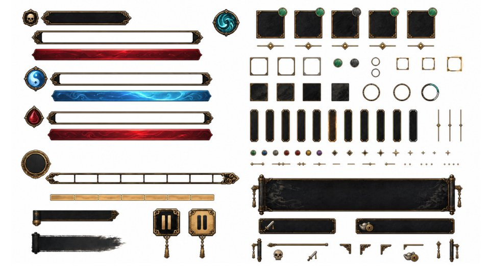
4. 在 PS 里，用这些零件拼出真正的界面，然后不断修改，直到界面符合我想要的样子；
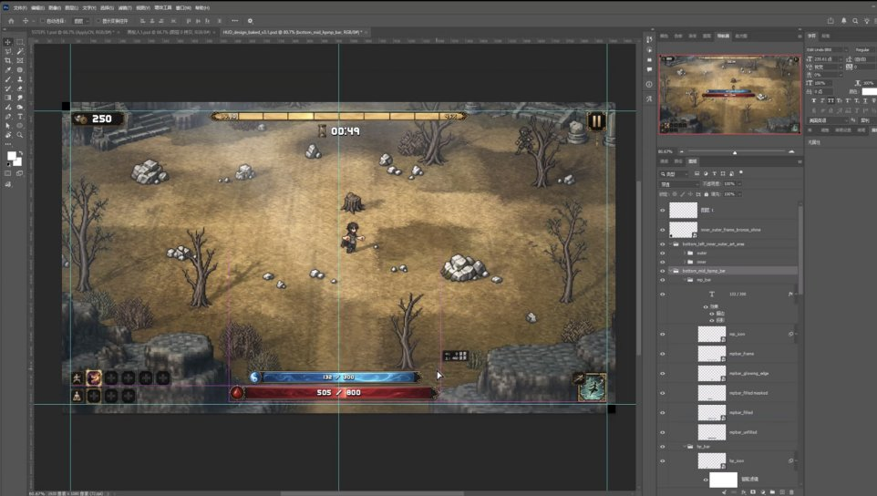
5. 让 Agent 直接读这个 PSD：图层名、坐标、尺寸、混合模式，它都能自己读出来，再一块块摆进 Godot 的场景里。这一步由 Agent 完成，可以用 psd_tools 这样的库来实现：
from psd_tools import PSDImage
psd = PSDImage.open("HUD_design.psd")
for layer in psd.descendants():
if layer.is_visible() and not layer.is_group():
print(layer.name, layer.bbox, layer.blend_mode)
layer.composite().save(f"export/{layer.name}.png")总而言之 HUD 就被我这样糊弄过去了。
后来在做菜单之类的东西时，我又碰到一个问题：界面窗口是固定大小的，换个分辨率就会变形。看到不同的 UI 组件时，我也很疑惑：不同的窗口、按钮，似乎都是同一套素材以不同的形态呈现，它们是怎么变出来的？
所以我又跑去问我的 AI 了，这才第一次知道了游戏行业里以组件化的思路去做 UI 的方式，和类似九宫格切图（Nine Slice）这样的处理。
正好那会儿我要做一个调节画面质量的滑杆，我就尝试了一下，拿到滑杆的设计稿以后，又通过类似的方式把它进一步分拆，再在 PS 里抠图并“重新组装”，最后输入 PSD，让 Agent 把它做成了一套可以复用的组件，于是便得到了下面这个小玩意儿——
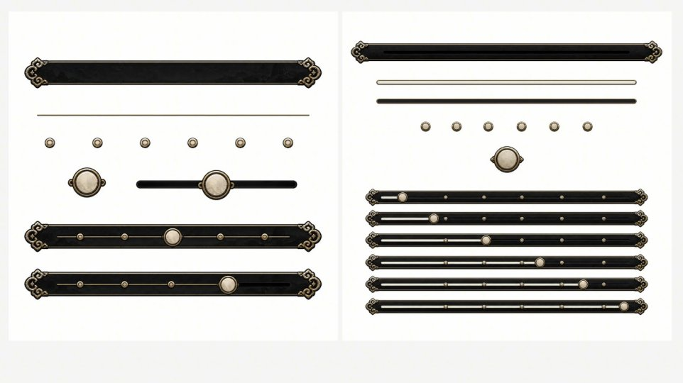
把图中这个滑杆、水平拉杆式的“UI 组件拆分。这个滑杆会用于玩家的画面质量调节，上面可能有5到6个不同的点加一个可以横向移动的圆形滑杆。我需要你把背景、细白色填充条、每个节点的定位点和可拉动的组件分别单独提取到白色背景上。
它实装到我游戏里是这样的：
后续我根据开发的需要陆续为它添加了几十种不同的 UI 组件，并通过 Skill 让我的 Agent 可以高效调用它，方便后续继续搭建新的 UI。
在有了所有这些精灵图、场景、UI 素材之后，我的游戏资产基本上也就做了个七七八八。把它们接进去以后的游戏，是这样的：
只能说看上去更像个游戏了。
但它的画面还很僵硬：只有贴图在移动，一点游戏的感觉都没有。也因此，我不得不开始攻克这个工作流程里最让我头疼的一个环节：动效。
< 未完待续 | To be continued >
（3/4）万字复盘：0代码基础，如何用 AI 做出10万人玩过的独立游戏？我的工作流程 + Vibe Coding 开发心得

今年 8 月，我做的第一款单机独立游戏《群侠传：幸存者》在 Steam 上线了，以抢先体验（EA）的形式免费开放
截至本文写作时，它在 Steam 上有 2100 多条评测，97% 是好评，被标记为“好评如潮”。累计超过 20 万玩家入库。
这个数据其实远远超出了我当时对它的预期。临近发售时，它的愿望单才堪堪超过 1000 个。一开始，我只是把它当作探索游戏开发和 Vibe Coding 的一个小作业，从没想过会有这么多人玩过它，还愿意给出积极的评价。

今年 4 月，给这个项目提交第一个 Commit 的时候，我没有任何游戏开发经验，没打开过游戏引擎，甚至一行代码也没写过，是个彻头彻尾的“小白”。但那时的我就想试试看，能不能用现有的这些 AI 工具，把我想要的这个游戏给做出来。
从结果看我应该是成功了——这里面的代码、美术、动画、音乐和配音，绝大部分都是我使用一系列的 AI 模型、Agent，在大约 3 个月里完成的。
早在今年 7 月的一条视频里，我就和大家分享过制作这个游戏的全套工作流程。但受视频篇幅和呈现形式所限，很多技术细节没能完整交代。之前想做的系列视频，也因为一些原因迟迟未能动工……
所以在这篇文章里，我想尽可能完整地写下这套工作流程，分享过程中碰到的问题，以及最后的解决方式：早期的需求和调研怎么做，代码怎么交给 Agent 写，美术和动画怎么从 AI 生成的素材变成游戏里能用的成品，以及音频和配音是怎么处理的，最后再到上线以后，AI 又怎么帮我做一些发布、运营的工作。每个环节用到的模型、工具，实践中行之有效的 Prompt，还有踩过的坑、绕过的弯路，我都尽量写进来了。
虽然这个游戏体量很小，题材略显老套，目前也还比较粗糙，但我仍然希望这套制作流程，能给正在或打算用 AI 做游戏的朋友一些帮助。
（P.S. 第一次写这么长的文章。全文较长，可以按大纲挑感兴趣的部分读。如果里面的经验和做法对你有帮助，欢迎点个赞或者关注！）
先上个大纲：
1. 游戏介绍与项目背景
2. 开发时间线、技术栈与工作流
3. 需求澄清与对标调研
4. AI Coding：引擎、模型与协作方式
5. AI 美术：风格统一与资产制作
6. AI 动画、特效与 CG
7. AI 音频：音乐、音效与配音
8. AI 辅助发布与运营
9. 开发心得：玩家反馈与人的判断
六、AI 动画、特效与 CG
在 2D 像素游戏里，让画面动起来，最常见的思路是 Sprite Animation，逐帧播放动画。说白了，有点像小时候看的连环画、翻页小人书。我需要的动作，基础的有待机、移动、冲刺；武学的有出拳、挥剑，还有高稀有度武学的专属特效。
动作生成：从动作表转向视频提帧
我最早去了解 2D 序列帧的做法时，几乎所有的传统教程都指向动作表（Spritesheet）的绘制。因此我便尝试着让生图模型直接画一整张类似这样的动作表，结果却是「形似神不似」：单帧看着都像那么回事，连起来以后，帧与帧之间是完全没有连贯性和合理性的。
（亏我还花了一个下午时间琢磨怎么在 Godot 里对齐 Spritesheet……）
比如下面这张——你能找到几对（不）顺拐的帧？
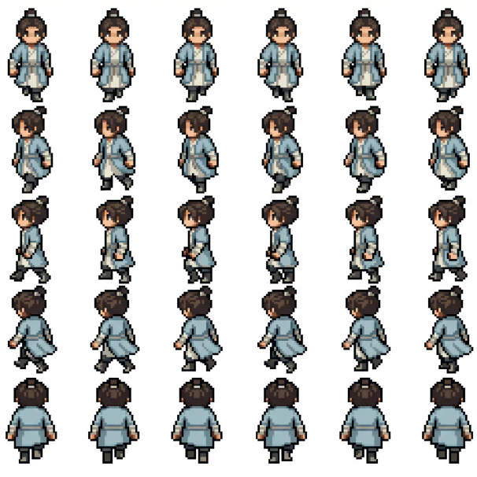
但我很快反应了过来：逐帧动画要的是连贯性，生图给不了，但 AI 视频生成却天生就有。所以我很自然而然地转向了从视频生成入手，反过来提取帧做 2D 逐帧的这条道路。以下，便是我的一个基本的操作流程：
七步流程：从精灵图到游戏动画
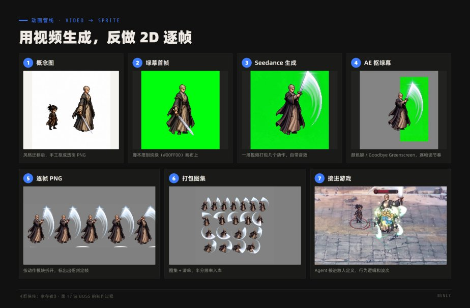
▲ 精灵图 → 绿幕首帧 → Seedance → AE 抠绿幕 → 逐帧 PNG → 切图集 → 接进游戏。
1. 精灵图：即上一节角色和敌人设计的产物，抠成透明底的 PNG，以待后续合成。
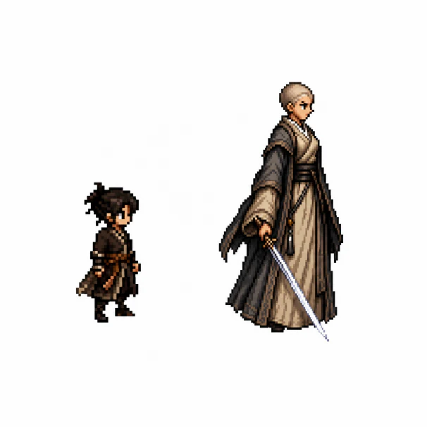
2. 绿幕首帧：视频模型不会输出透明背景，所以先用脚本把角色摆到一张 16:9 的纯绿（#00FF00）画布上，当作视频的首帧。角色在画面里占多大，基本就决定了它在游戏里有多大；招式大、特效多的角色要缩小一点，给特效留出边。
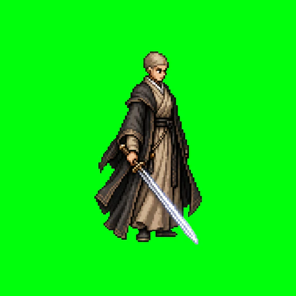
1. （角色身上本来就带绿色特效的，比如毒系，就换成品红 #FF00FF）
3. Seedance 生成视频：一段视频里打包好几个动作，攻击都写成「跑动中插入的一次出招」，这样拆出来的攻击动作，才能和跑步循环无缝衔接。当然，如果是一些特效比较满的大招，可以单独放一个 4-5S 的片段里生成。
4. AE 抠绿幕：导进 After Effects，用颜色键抠；动作卡壳、鬼畜的地方，我会在 AE 里逐帧调整节奏，按自己的理解重新分解组合，再删掉没用的帧，保持整体流畅自然。
5. 导出透明底动画：按动作模块拆开，导出为含 Alpha 通道的视频（如 Apple ProRes 4444 编码的 MOV），供后续提帧。有时还要标出「出招判定落在第几帧」这样的辅助信息。
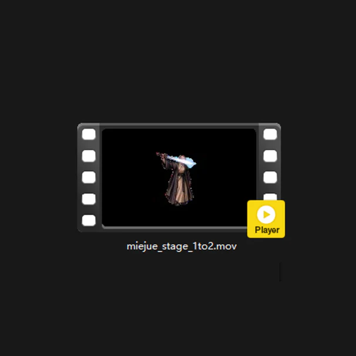
6. 切图集：用脚本提取逐帧 PNG，再打包成图集（atlas）加一份清单（manifest）。代码只认清单，不假设任何一帧的原始尺寸，这样素材重新生成、改了尺寸，代码一行都不用动。图集按半分辨率打包，运行时再放大回去，以此节约显存和性能开销。
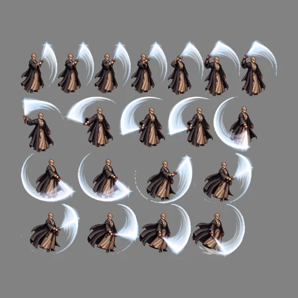
7. 接进游戏：Agent 按清单把动画接进敌人定义和行为逻辑，再排进对应波次。
Seedance 的 Prompt，我也有一套自己摸索出来比较行之有效的模板。下面是一个小兵的完整例子：
生成一个2D像素风武侠游戏的敌人Sprite动画。这一组动画为「竹棒乞儿（enemy_beggar_stick）」的基础移动与近身攻击动作组，攻击穿插在追击移动动画间播放。
图1是该敌人的侧视设定图。敌人外形、比例、服装、配色、轮廓、像素风格全部从图1读取。
敌人：一个瘦小的江湖乞儿，头发散乱、用旧布条随便束起，脸上有灰尘和风霜。上身穿破旧灰褐短衫，衣角袖口满是补丁，下身束腿麻裤配草鞋，手持一根细竹棒，整体轮廓低矮、轻浮、动作毛躁。
风格：像素角色设计，低饱和尘土色（污灰褐、土黄、旧布绿），是被风沙磨旧的江湖流民杂兵。
基准：画面为单角色，纯绿色（#00FF00）绿幕背景方便抠像，固定镜头，角色朝右、侧面视角，相对位置不变。轮廓稳定、像素边缘清晰、成品适合逐帧提取为游戏动画素材。
动作整体要求：所有攻击都是在追击移动过程中「插入」的一次出招——起势贴合移动循环某一帧，收势衔接下一帧。移动循环为瘦小乞儿急切的碎步前冲，身体微前倾、手脚轻浮。
重要约束：无脚底阴影，无背景音乐，有音效。固定镜头。
分镜：
【分镜1】角色处于身体前倾的奔跑状态，约0.5S。
【分镜2】播放[竹棒横扫]：借前冲惯性，单手持竹棒由后向前快速横扫一道短弧，扫击轻快，收势带一点回弹。
【分镜3】恢复奔跑，约0.5S。
【分镜4】播放[竹棒短戳]：压低重心，持棒向正前方快速一戳，出手急促、收手轻飘。
【分镜5】恢复奔跑，约0.5S。
动画是高质量2D游戏动画风格，连贯自然流畅，有打击感和武侠气息，突出"人多、毛躁、轻量"的杂兵感。
限制：竹棒是细而轻的普通竹棒，非制式兵器；不要画得健壮或衣着整洁；攻击范围短，不要做成大开大合的高手招式。
可提取片段：move（奔跑循环）、attack_sweep（竹棒横扫）、attack_thrust（竹棒短戳）。如果把下面这几条规矩立住，一般出来的动画就不怎么烧心了：
• 背景写死精确的色值，固定镜头，角色朝右侧视，无脚底阴影。
• 「无背景音乐，有音效」：音效要和动作对齐，后面能直接拿来用（音频那一节细说）。
• 估时长：移动段约 0.5 秒，普通攻击约 1 秒，重招、蓄力 1.5 到 2 秒，加起来就是建议的生成时长。
• 别堆一大墙「不要……不要……」。限制一个东西最好的方式，常常是 Prompt 里根本不提它。先上一两条真正关键的限制，跑出来发现问题，再补。
早期的六个阵营、二十多种带动画的敌人（包括多招式的精英和 BOSS），外加主角的全套动作，都是这条管线量产出来的。同样的思路，还能拿去做投射物、场景里的动态元素，等等等等。
程序化特效：Shader 与可视化调参
还有一部分特效，比如冲击波、刀光、真气粒子，我是让 Coding Agent 用程序化的方式做的。因为这些元素要随着技能的类型、形式和范围变化，烘焙成固定的序列帧其实不太科学。
在早期，为了节约时间精力，我会从诸如 godotshaders.com 这样的社区搜集一些开源的 Shader，来快速实现一些不错的效果。比如我当时用的程序化刀光，就是来自这位大佬开源的项目（Alkaliii/spellbook-gd）：
那这些 Shader 怎么用呢？我直接把源码的链接丢给了 Agent，让它去消化，并且接入到我的游戏里。
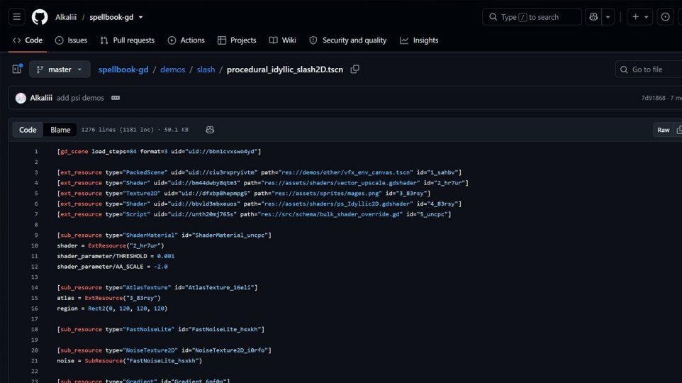
因为这些 Shader 里面是通过一系列的参数定义它的具体色彩、样式的，为了能让我高效调节，我最后把它做成了一个可视化的调参台：拖一拖里面的滑块，就能把效果调到想要的样子。
就像打游戏捏脸、捏身材一样。调到满意了，保存下来，就能在实际游戏里看到了。
到了最近的 V0.2.2、V0.2.3，我又把招式特效重做了一轮，更多地让 AI 帮我自己写一些 Shader，用火焰、粒子、星芒等元素实现更复杂的效果，并做了「像素」和「平滑」两种画风变体，玩家可以在设置里自己选。
就是借助这两种途径，我完成了游戏里面绝大多数动态视觉效果的构建。
剧情 CG：分镜、生成与剪辑
游戏里有三处剧情，是用 CG 来讲的：每次启动时的片头、第 17 波的过场，以及第 20 波击败最终 BOSS 之后的终章。我给自己定的分工很简单：玩法交给实机，剧情交给 CG。
而因为没有了程序实现上的限制，这块我就看齐了比较偏 3D 拟真 PBR 的风格去……拙劣地模仿了一下吧 XD
这一部分的内容我在之前一期有关于 CG 生成的视频里其实也做了非常详细的讲解，就不在这一篇文章里去做赘述了（感兴趣的朋友可以自行搜索 BV1DuhP6rEUf）。简言之，一个这样的 CG，大致可以通过以下几步做出来：
1. 喂上下文：把游戏的世界观设定以文档的形式喂读进去；
2. 头脑风暴：和 Agent 一起商量，某一段剧情要怎么表现，一般是我有一些稀奇古怪的想法，它帮我落实成具体的计划；
3. 分镜：选好角色立绘出脚本，大致规划分镜；
4. 素材：准备要用的角色和场景资产，生成三视图等参考素材；
5. 写 Prompt、生成：用参考图生视频；
6. 配乐剪辑：Suno 写主题曲，PR / AE 剪辑卡点。
每一段的 Prompt 结构是固定的：风格锚 → 目标综述 → 参考图绑定 → 场景 → 分镜时间轴 → 避免。比如片头最后一段（第 8 段）的目标综述：
武侠游戏 OP CG 第 8/8 段（终章），2.39:1 宽银幕，10 秒，四镜一气呵成：双方全员自画面两侧对冲蓄势——兵刃低位全力奔跑，碰剑之前两军全程未接触 → 极速推镜推向两位领袖，二人扬剑下劈的瞬间进入慢动作升格 → 两剑在砍落轨迹中交碰刮出火花——这一点是全段唯一的能量释放点，时间恢复常速、闪白炸开 → 游戏标题 LOGO 以冲击方式从白光中撞入落定、掠光扫过字面、静止定格收束全片。但这个我觉得其实也不需要分享太多了。因为现在写Prompt、做编剧导演啥的Skill可谓是多如牛毛了。
七、AI 音频：音乐、音效与配音
美术、动画都齐了，但一个好游戏带给玩家的，还有听觉层面的体验。
这块我分成了三条线去做：音乐、音效和配音。
音乐：用核心动机统一 BGM
BGM 用的是 Suno V5.5，方向大概是武侠激战感。但做这类游戏的 BGM，旋律不能太重，不然在游戏里会抢戏，干扰玩家的操作。
为了让整套曲子听起来像「一家人」，我有一个屡试不爽的小办法：先做一首最核心的战斗 BGM，把里面最抓耳的那段动机单独提取出来，后面的 BOSS 战、结算界面的曲子，都用 Remix 从这个动机里长出来。
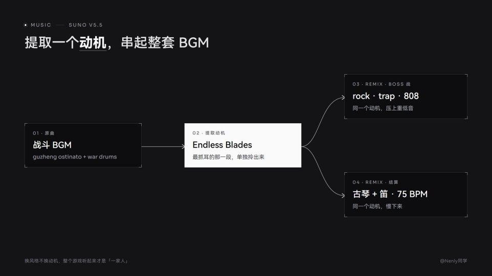
第一首战斗 BGM 的 Prompt 是这样的：
Driving wuxia action BGM built on a locked guzheng ostinato and deep Chinese war drums, with muted low strings pulsing on offbeats, Short, dry percussion hits carve a martial groove; occasional dizi stabs and swells punctuate wave changes, Arrangement stays loop-friendly: tension rises via denser rhythms, octave shifts, and subtle filter automation rather than new melodies, holding a focused, relentless forward push for long combat sessions, minimal, strong, lowBOSS 战那首就简单得多，在动机的基础上 Remix，只写了一行：
Boss battle game BGM, rock, trap, dark, tension, heavy 808 bass生成之后，我会从大量结果里挑，再自己做剪辑、混音和后期。为了这些音乐，V0.2.0 还加了一个游戏内的音乐播放器，现有的曲子都收在里面。
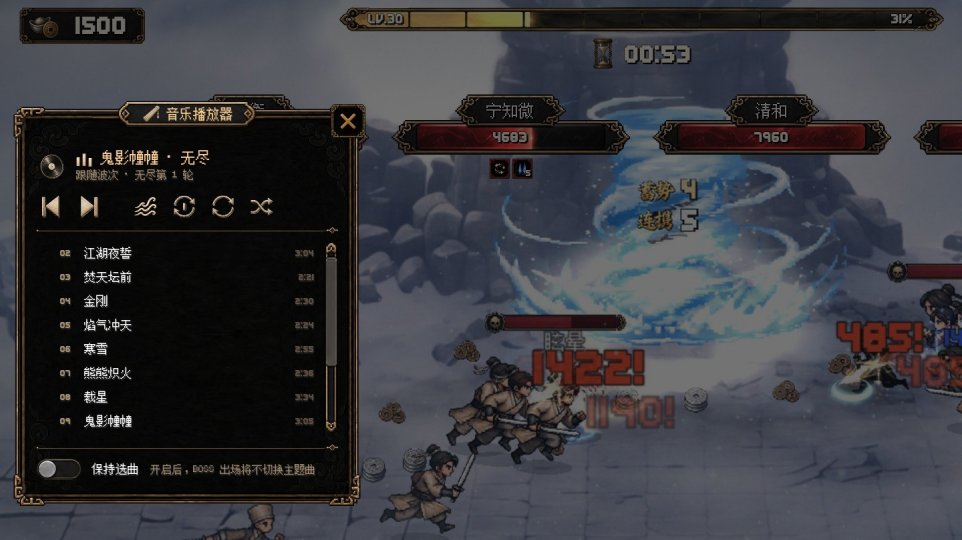
音效：独立生成与视频音轨提取
音效我前期主要使用的是 ElevenLabs，大部分的 UI 和升级、拾取物等音效都来自于它。它有自家的 AI SFX 生成模型，写几句提示词就能生成符合需要的音效；平台上也有大量别人做好的 AI 游戏音效，可以直接下载使用。
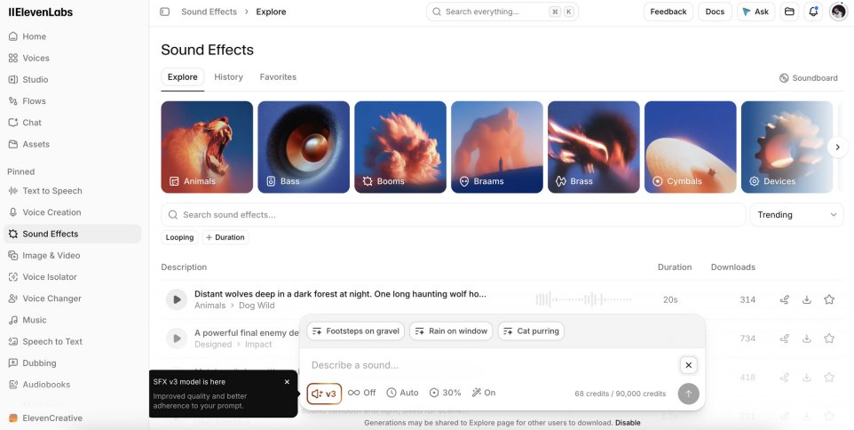
后来，在做前面提到的序列帧动画的时候，我发现了一个意外之喜：
诸如 Seedance 2.0/2.5 这样的视频模型配着画面直出的音效质量是非常高的，而且跟画面的动作非常贴。我用 Seedance 2.0 生成的动画视频，大部分时候可以直接把音效提取出来用，这也是为什么前面的视频 Prompt 里要写「无背景音乐，有音效」。
▲ Seedance 2.0 直出的视频，自带和动作对齐的音效。
偶尔它会和背景音乐、脚步声混在一起，这时候我就用 Meta 开源的 SAM Audio 在本地把它们拆开。
音效和音乐在接入游戏前，我一般会让 Agent 用 ffmpeg 把音频逐个测一遍响度，再按统一的基线配平（我们定的是整体约 -16 LUFS、真峰值不超过 -1 dBTP）。不然同屏十几路音效一叠加，就很容易爆音；配音也会一个角色大声、一个角色小声。
配音：声音画像与表演指令
游戏的剧情对白是有配音的。最早我用的是 ElevenLabs 的 v3 模型，给每句台词加情绪标签（[stern]、[scorn]、[menacing] 这类）。那会儿我生成的一些音频，大概效果是这样的：
【待补配音示例】
那会儿我感觉这些配音大概能有 60-70 分，基本表意没问题，就是一些情绪比较慷慨、激昂的部分，会缺乏一些感染力。
直到 7 月底，我把主力换成了 SeedAudio 1.0。第一次听到它配的音的时候，我也差不多就是看原子弹爆炸瘫坐的级别了。
它的写法和以前不太一样：每个角色先写一段「声音画像」，声龄、音高、口音、语速、情绪底色都写清楚；再写台词，台词里用方括号写表演指令，指令本身不会被念出来。比如法慈方丈：
说话人声音特点：
建议声龄 65～75 岁，男性，低音宽厚、有稳定胸腔共鸣；普通话庄重，可带极轻中原寺院诵念的节拍，但不要拉成长腔或刻意模仿法会唱诵。常态语速约 0.75～0.9 倍，气息绵长，句子按因果关系自然分层，"阿弥陀佛"应低沉平和而非模板化；立规和劝退时只增加声音重量，不提高攻击性。情绪底色是慈悲、审慎、守约和对伤亡的真实不忍，同时坚信纵恶不惩也是罪。
说话内容：
[低沉诵念，悲悯] 阿弥陀佛……[忧虑伤亡，缓慢劝止] 但求速战速决，少造杀孽。能少伤一人，是一人。
[庄严说理，缓慢分层] 因果有报，善恶有偿。小施主只怕今日再添杀业，[沉痛警醒，声音加重] 却不知纵恶不惩，便是为来日种下更大的恶因。[立场坚定，不带敌意] 你既执意不退，老衲只好得罪了。声音画像可以写得很具体。比如有一个服了毒的角色，我给他的描述是「服毒后嗓音发黏发哑，贴耳低语，尾字带笑」。
而它在一致性层面，目前也是可以做得相对不错的。传一段 10S 左右的短音频，“克隆”的效果能有原来的八九分相似。实在固定不好的，我会再拿 FishAudio、IndexTTS 这样更偏专门“克隆音色”的模型去补。
在本地，每个角色的声音画像、每句台词的表演指令，都整理在一份配音名录里；生成出来的音频，Agent 帮我搭了一套按交付批次整理、用 Audition 工程批量渲染的工具链。这都是一些比较细枝末节的东西了，但基本上还是在为我这个主要工作流服务的。
除了开发这个游戏本身，AI 其实还在一个层面帮助我极大地提高了效率，就是游戏的上架、运营。
< 未完待续 | To be continued >
（4/4）万字复盘：0代码基础，如何用 AI 做出10万人玩过的独立游戏？我的工作流程 + Vibe Coding 开发心得

今年 8 月，我做的第一款单机独立游戏《群侠传：幸存者》在 Steam 上线了，以抢先体验（EA）的形式免费开放。
截至本文写作时，它在 Steam 上有 2100 多条评测，97% 是好评，被标记为“好评如潮”。累计超过 20 万玩家入库。
这个数据其实远远超出了我当时对它的预期。临近发售时，它的愿望单才堪堪超过 1000 个。一开始，我只是把它当作探索游戏开发和 Vibe Coding 的一个小作业，从没想过会有这么多人玩过它，还愿意给出积极的评价。

今年 4 月，给这个项目提交第一个 Commit 的时候，我没有任何游戏开发经验，没打开过游戏引擎，甚至一行代码也没写过，是个彻头彻尾的“小白”。但那时的我就想试试看，能不能用现有的这些 AI 工具，把我想要的这个游戏给做出来。
从结果看我应该是成功了——这里面的代码、美术、动画、音乐和配音，绝大部分都是我使用一系列的 AI 模型、Agent，在大约 3 个月里完成的。
早在今年 7 月的一条视频里，我就和大家分享过制作这个游戏的全套工作流程。但受视频篇幅和呈现形式所限，很多技术细节没能完整交代。之前想做的系列视频，也因为一些原因迟迟未能动工……
所以在这篇文章里，我想尽可能完整地写下这套工作流程，分享过程中碰到的问题，以及最后的解决方式：早期的需求和调研怎么做，代码怎么交给 Agent 写，美术和动画怎么从 AI 生成的素材变成游戏里能用的成品，以及音频和配音是怎么处理的，最后再到上线以后，AI 又怎么帮我做一些发布、运营的工作。每个环节用到的模型、工具，实践中行之有效的 Prompt，还有踩过的坑、绕过的弯路，我都尽量写进来了。
虽然这个游戏体量很小，题材略显老套，目前也还比较粗糙，但我仍然希望这套制作流程，能给正在或打算用 AI 做游戏的朋友一些帮助。
（P.S. 第一次写这么长的文章。全文较长，可以按大纲挑感兴趣的部分读。如果里面的经验和做法对你有帮助，欢迎点个赞或者关注！）
先上个大纲：
1. 游戏介绍与项目背景
2. 开发时间线、技术栈与工作流
3. 需求澄清与对标调研
4. AI Coding：引擎、模型与协作方式
5. AI 美术：风格统一与资产制作
6. AI 动画、特效与 CG
7. AI 音频：音乐、音效与配音
8. AI 辅助发布与运营
9. 开发心得：玩家反馈与人的判断
八、AI 辅助发布与运营
出包、上传与更新公告
上架 Steam 其实很辛苦，有一大堆要做的东西：平面物料、商店详情页、宣传片、成就系统……只能一件一件地做。
但其中和开发有关的部分我还是让 AI 来帮我代劳。比如最重要的导出和传包，我一开始也是不知道该怎么做的，而我的 AI 只是简单地遍历了一下 Steam 的文档库，就告诉我要安装 Steamworks SDK 和 SteamCMD，然后在命令行里弹出了让我辅助登录的通知，并最后指导我完成了一系列上传后在 Steamworks 后台设置 Depot 和分支的操作。
直到现在，每次做完一个小版本，确认所有内容符合要求以后，我只需要一句话就能完成一次发布，比如：
清理工作树，分批提交，然后出包，版本号为0.1.2，上传Steam以后写提交日记，然后向我汇报自0.1.1.5以来所有的更新内容，这份汇报是我撰写更新公告的参考。它就会帮我做完下面这些事情了：
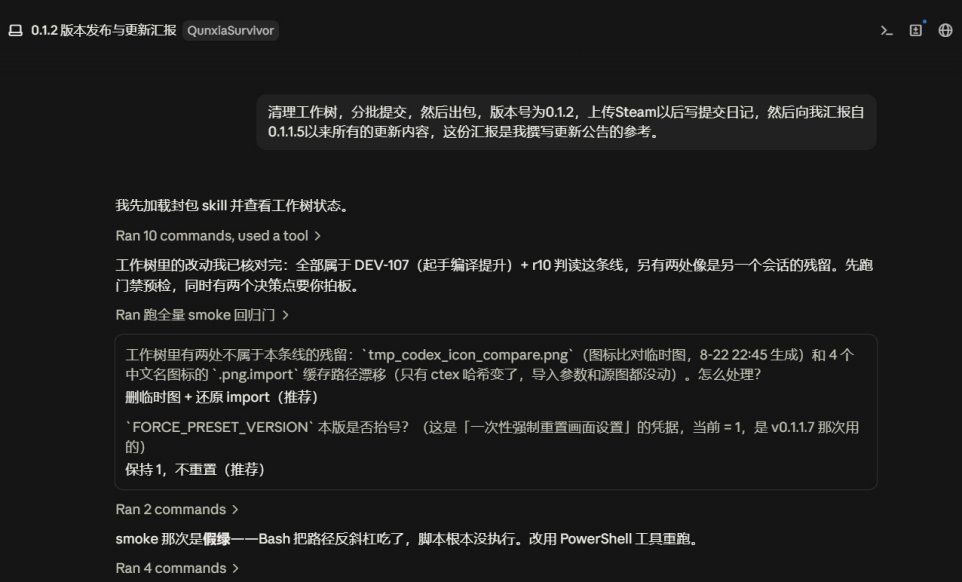
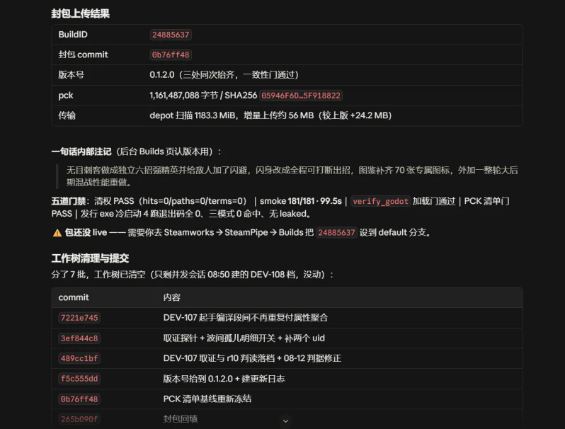
根据我设计的 Skill，它还会自动读取这段时间的 Commit 记录，并汇总成一个新增/修复/变动的清单，给我写公告用。
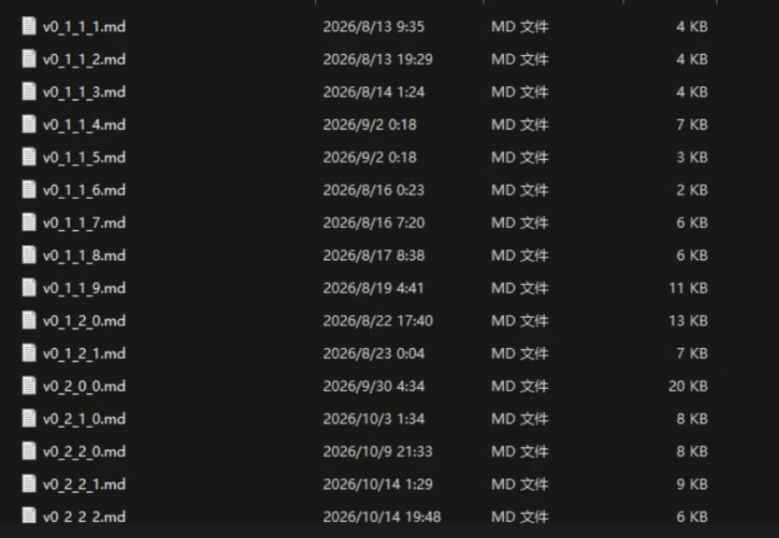
更新公告后面的大长串清单多数时候都是 AI 帮我写的。前面的亮点段落多数时候则会是我自己起草，然后让 AI 来帮我搜集相关素材并润色。
成就配置与 SteamStats 数据分析
Steam 游戏的一个很重要的部分是成就。目前我的游戏里一共有 61 个成就。图标就不说了，AI 生成的嘛。但是还有一个很烦人的过程是要把它们上传到 Steam 的后台上。Steam 后台的表单需要填写它们的名字、描述和对应的 API Name。我感觉手填太累了，就直接问 GPT 能不能 Browser-use 给我填了，吃了个饭回来就全搞好了。
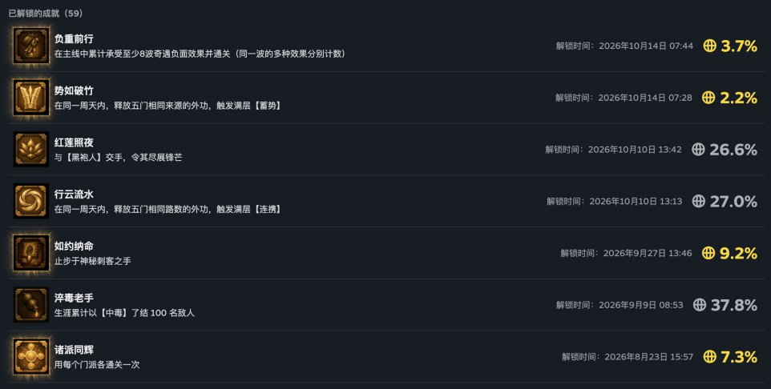
对了，我通过 SteamStats 收集的 1700 多个数据项目也是这样填完的。
Steam 是支持匿名性质的数据聚合收集的，我现在收集的数据主要包括：
• 性能数据：每一波的帧率摘要。本地记一份，玩家提交反馈时随诊断包附上；再通过 Steam 的匿名聚合，看全体玩家的低帧波次占比。用它定位掉帧，排优化的优先级。
• 玩法数据：武学、道具的选取率和胜率，用来观察平衡和内容方向。
除了用 AI 辅助我完成了这个收集过程以外，我还让 AI 帮助我去对它们做详细的分析、归档，并且为我提供像这样的阶段性报告。
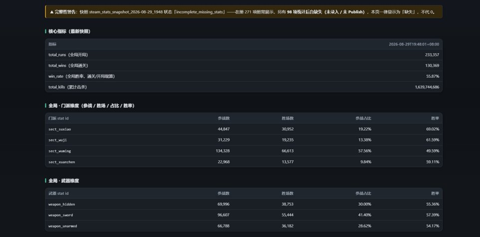
玩家反馈：收集、归类与迭
另外一个比较重要的部分，则是玩家的反馈。
我在游戏主菜单的「制作人的一封信」里，预埋了一个反馈入口，直达一张飞书表单，分成 Bug、崩溃报告、玩法建议几类，尽量降低大家提交的成本。
这个表单是一个飞书的多维表格，而飞书自己的命令行工具 lark-cli 在登录后是可以自行拉取相关数据甚至是回填标记的。我也利用它，把表格和本地的数据存档连了起来。
这些反馈我同样不用一条条去审核。每天 AI 把数据拉下来、去重、聚类，告诉我这个版本可能有什么问题，哪些已经修掉了，哪些还要继续动，我再来拍板。
其他一些更日常化的工作，可能类似于：玩家在群里说一句话，我复制粘贴给 AI，跟它说：「你评估一下，能做吗？」如果能做，它就会落实到我下一版的更新里。
这些持续收集的反馈和信号，帮我在两个月里密集迭代，解决了很多上线之初的问题，让游戏逐步变成了现在的样子。
九、开发心得：玩家反馈与人的判断
上线前后的反馈
老实说，刚发布这个游戏的时候，我其实并没有对它寄予非常高的期望。
7 月初我在我的社交媒体上第一次发布了这个游戏的宣传片。在那时，我其实并没有看到任何关于这个游戏能受到大家欢迎的信号——评论区里主要都是一些「又多了一个垃圾 AI 游戏」、「浓浓的页游风味」这样的评价，也有人好像并不相信我真的把它做了出来。
而我的频道观众似乎也是关注这个游戏本身的制作过程多过想玩这个游戏本身。直到上线前两天，游戏的愿望单才堪堪超过了 1000 个。
所以那段时间，我其实一直在反复安慰自己。和我太太聊起这个游戏时，我经常搬出那句“一个制作人的前十个作品都是垃圾，所以尽快做完它们吧”，试图跟她解释：像我这种半路出家的人，做出来的第一个游戏，多少应该得到一点宽容。我还会补上一句：这个游戏至少已经帮我做出了两期视频——虽然播放量都很一般。说这些，既是在向她解释，也是在说服自己：这两个月的工作，总归不是毫无价值。
但上线以后，这个游戏所经历的，就是我没曾预料到的了：
• 上线第二天一觉醒来，激活数一个晚上涨到了五六千，抖音上一位做游戏介绍的老哥特意介绍了它，帮我捕获了第一批种子玩家；
• 第三天，就有玩家玩了超过 10 个、20 个小时；
• 上线 5 天左右，玩家在游戏里累计砍掉的敌人，超过了 10 亿只；
• 后台反馈大概三天就收到了 200 多条；
再后来，有非常知名的主播老师在直播中做了试玩，一些国内媒体也先后写了报道，它还上过一次 Steam 首页「人气蹿升的免费游戏」的第二位。很多人是知道这个游戏用了 AI 的，但他们照样愿意下载、玩下去，也认真地给我提意见。
所以现在回头看，AI 固然会影响玩家对一个游戏的第一印象；但最终一款用 AI 做的游戏可以走多远，玩家愿不愿意留下、愿不愿意给予好的评价，最后还是看游戏好不好玩。
人的判断：测试、感受与取舍
这个游戏也教会了我许多事情，其中最重要的一件，或许是 AI 时代人的价值所在。
你固然可以用 AI 帮助你完成一个游戏开发过程中 90%的所谓“工作”。但最终决定这个游戏好不好玩，或者说能不能成功的，可能往往就是剩余要人来决定的那 10%。
我在很多次分享、很多个视频里都反复提到这样一件事情：AI 固然可以在 5 分钟里，给我做出几十个技能的草案、几百个道具的效果，甚至几千字的对话文案。但这些技能，玩家用起来真的爽吗？这个道具让构筑更有意思了，还是只让数字变得更大？这些对话，真的能让玩家感受到我想在剧情里表达的东西吗？
这些问题，AI 回答不了。最终还是得我作为一个人，去测试、去感受、去拍板。
所以，当 AI 可以帮我们做程序、美术、动画、音乐，甚至承担上架和运营工作时，对一个游戏来说，最重要的是什么呢？
我觉得，是人啊。
那个知道游戏到底好不好玩，并且愿意为了一个好玩的游戏，不断努力迭代，付出这些时间精力的人啊。
现在对于想做游戏的独立开发者们来说，我觉得真的是一个最好的时代了。换在 10 年前、20 年前，光是掌握做游戏所需要的一个技能分支，可能就要几个月甚至几年；只靠一个人的力量去开发一款游戏，简直无法想象。
但在今天，只要你愿意付出时间、努力和耐心，再借助 AI，哪怕你只是一个人，也可能真的撬动以往只有大公司、大团队才能做到的事情。
如果这篇文章也让你想起了一些你自己曾经有过的、想去做点什么的念头，我想跟你说：快去做吧。我这种人都能把一个游戏做出来、走到上架这一步，你也一定可以的。
感谢你看到最后。因为篇幅所限，这篇文章介绍的流程很长，难免有一些细节没能讲透。但如果你对这里面的一些技术细节感兴趣，请一定要通过留言和我交流。知无不言！
也欢迎关注我。后续我会继续在这里，和你分享这一路上的实践与体会。
祝你也能做出那个你想要的游戏 ;-)